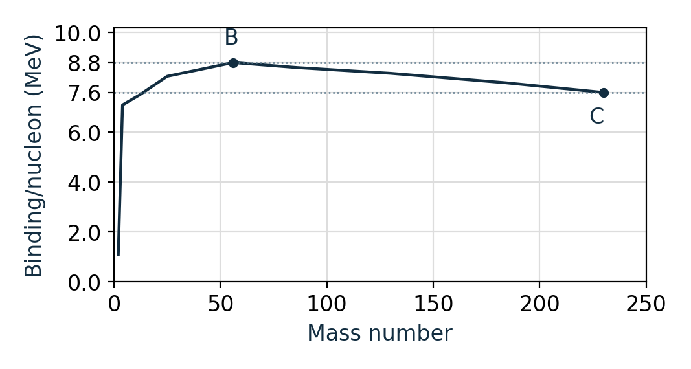
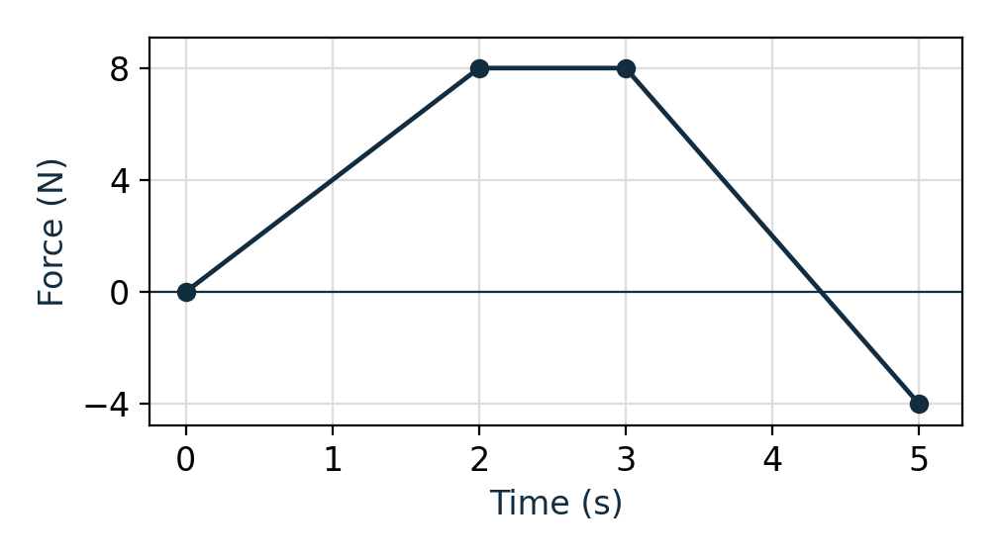
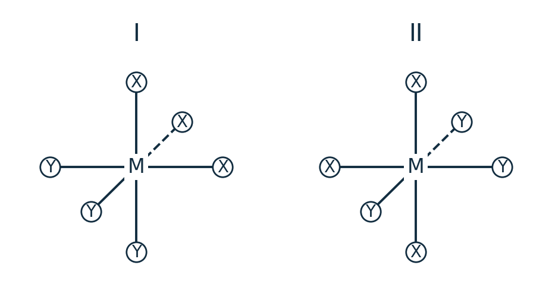
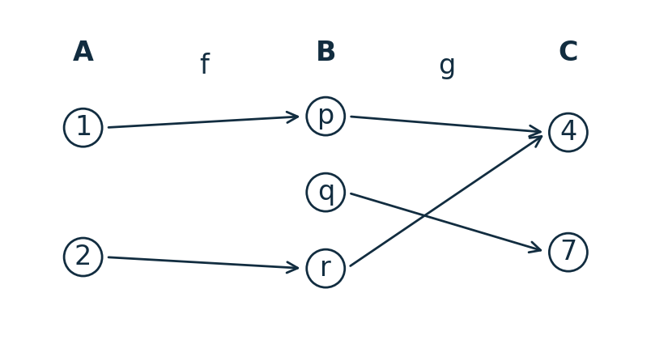
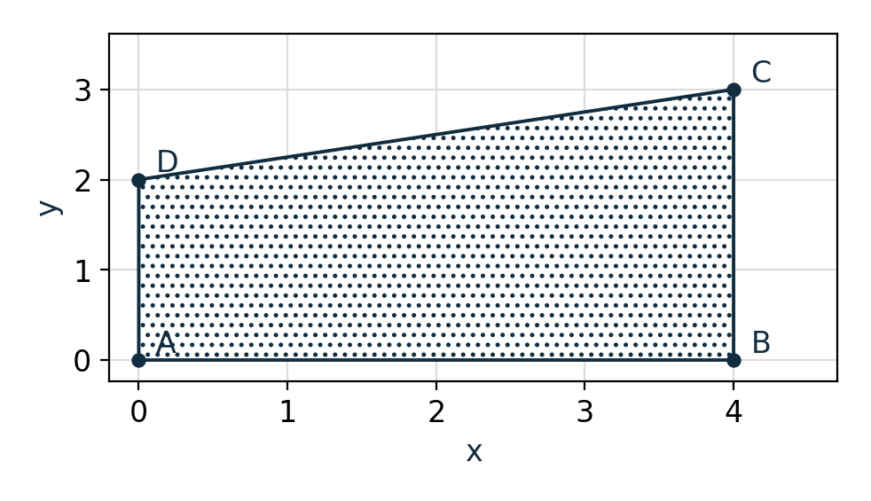
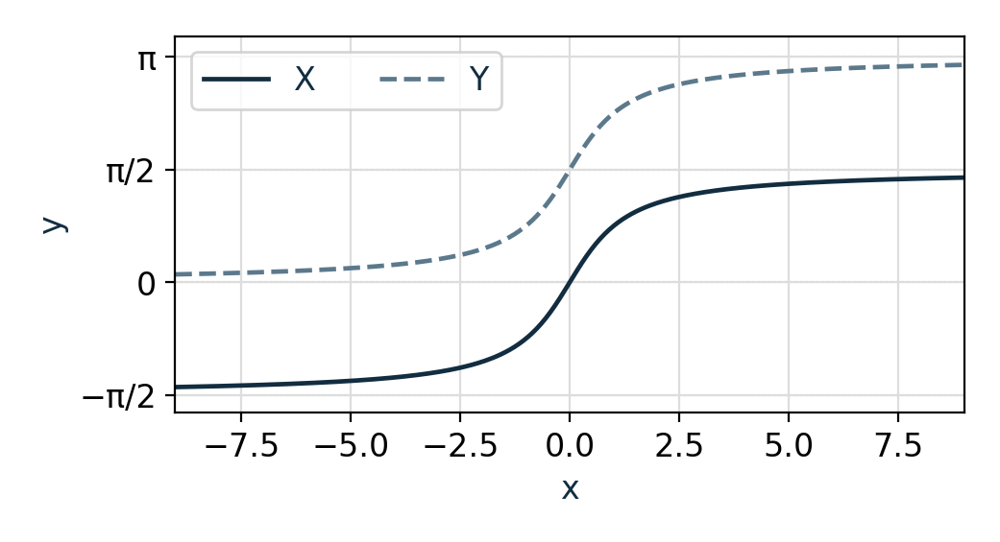

COMEDK UGET Test 22
180 minutes · 180 questions · +1 per correct answer · No negative marking
Physics
Q001. A hydrogen atom in orbit n absorbs enough energy to reach 2n. What is the ratio of the absorbed energy to the magnitude of the kinetic energy in the final orbit?
A) 3
B) 3/4
C) 4
D) 1/4
Worked solution
Answer: (A) 3
Why and working: Write the initial energy as −K. The final energy is −K/4 from the inverse-square scaling. In a Coulomb orbit the final kinetic energy is +K/4, so the ratio is (3K/4)/(K/4)=3.
Why not the others: (B) uses the initial kinetic energy as denominator. (C) compares the two kinetic energies. (D) gives the final-to-initial kinetic energy ratio.
Q002. The mutual gravitational force between two spherical masses is F. One mass is tripled, and their centre separation is also tripled. What is the new force?
A) F
B) 3F
C) F/9
D) F/3
Worked solution
Answer: (D) F/3
Why and working: The product of masses scales by three and the squared separation by nine. Thus F_new/F=3/9.
Why not the others: (A) treats separation as linear. (B) holds the distance fixed. (C) holds the mass product fixed.
Q003. On the plotted binding-energy curve, approximately how much binding energy would be gained per nucleon if a collection of nuclei near C moved into products near B with total nucleon count conserved?

A) 7.6 MeV
B) 1.2 MeV
C) 8.8 MeV
D) 16.4 MeV
Worked solution
Answer: (B) 1.2 MeV
Why and working: The figure shows roughly 7.6 MeV per nucleon at C and 8.8 at B. With the same total number of nucleons, the gain per nucleon is their difference, approximately 1.2 MeV.
Why not the others: (A) uses the initial value. (C) uses the final value. (D) adds the values instead of subtracting.
Q004. An unbiased p–n junction has a depletion region. Which description explains its electric field before an external source is attached?
A) Mobile electrons pile up as positive charge on the n side
B) Only neutral atoms remain everywhere in the depletion region
C) The junction is uniformly positive on both sides
D) Uncovered fixed positive donor ions on the n side and fixed negative acceptor ions on the p side
Worked solution
Answer: (D) Uncovered fixed positive donor ions on the n side and fixed negative acceptor ions on the p side
Why and working: Diffusion removes many mobile carriers near the interface, exposing ionised donors and acceptors with opposite signs. These spatially separated fixed charges create the built-in field.
Why not the others: (A) electrons are negatively charged. (B) depleted refers to mobile carriers. (C) the ion signs differ across the region.
Q005. A thin specimen stretches lengthwise under a uniaxial load. In a separate test the material contracts uniformly under hydrostatic pressure. Which pair of strain measures enters the corresponding moduli?
A) Axial fractional length change, then fractional volume change
B) Fractional volume change, then axial fractional length change
C) Change of cross-sectional area, then angle change
D) The same absolute change of length in both tests
Worked solution
Answer: (A) Axial fractional length change, then fractional volume change
Why and working: Young's modulus divides axial stress by longitudinal strain ΔL/L. Bulk modulus divides the pressure increase by the magnitude of ΔV/V.
Why not the others: (B) swaps the two relevant strain measures. (C) angle change belongs to shear. (D) a modulus uses relative strain, and bulk uses volume.
Q006. Two electrostatic field lines in a sketch are nearer together around P than around Q. A test charge of the same magnitude is released at each point, with the sign reversed between trials. What can the usual field-line convention still tell us about the initial forces?
A) The force magnitude is greater at Q because the sign was reversed
B) The magnitudes agree at both points
C) The force magnitude is greater at P despite the change of sign
D) Neither force direction can depend on the sign of the test charge
Worked solution
Answer: (C) The force magnitude is greater at P despite the change of sign
Why and working: Closely spaced lines in the standard drawing convention indicate stronger E. The magnitude is abs(q)E, so reversing the test charge reverses the force relative to the local field without changing its magnitude.
Why not the others: (A) changing charge sign affects direction only at each point. (B) the line density indicates a difference in field strength. (D) the force reverses when q changes sign.
Q007. A dipole is rotated from 60° to 120° relative to a uniform field, with no change in the dipole moment p. What is the increase in its potential energy?
A) Zero
B) pE/2
C) −pE
D) pE
Worked solution
Answer: (D) pE
Why and working: From U=−pE cos θ, the initial energy is −pE/2 and the final energy is +pE/2. Their difference is pE.
Why not the others: (A) compares equal sine values, which determine torque. (B) uses just one endpoint energy magnitude. (C) reverses the endpoint subtraction.
Q008. A sealed hydraulic machine holds its output piston fixed. A 30 N load is added to its 5 cm² input piston. What extra force must restrain a 40 cm² output piston, neglecting piston weights and head differences?
A) 3.75 N
B) 30 N
C) 120 N
D) 240 N
Worked solution
Answer: (D) 240 N
Why and working: The pressure increment is 30/5 N per cm² and is transmitted through the liquid. Multiplying by 40 cm² gives 240 N.
Why not the others: (A) inverts the piston area ratio. (B) pressure rather than total force is transmitted equally. (C) uses half the output area.
Q009. While powered by an ideal source, a resistive heater would dissipate 180 W at 12 V. The source is swapped for a 6 V source and then the heater runs for twice as long. How does energy dissipated compare with the first run, assuming fixed resistance?
A) The same
B) Half as much
C) One quarter as much
D) Twice as much
Worked solution
Answer: (B) Half as much
Why and working: At fixed R, P=V²/R, so power drops to 45 W. Multiplying by twice the run time gives one half of the original energy.
Why not the others: (A) treats power as proportional to voltage. (C) omits the longer run time. (D) uses the time change without changing power.
Q010. How is the magnetic field deep inside a long, uniformly wound current-carrying solenoid oriented?
A) Around its axis in circles
B) Radially outward from its axis
C) Approximately parallel to its axis
D) Randomly along different turns
Worked solution
Answer: (C) Approximately parallel to its axis
Why and working: Transverse components from the turns cancel by symmetry near the centre. Their axial components reinforce, giving a nearly uniform axial field.
Why not the others: (A) describes the pattern around a straight wire. (B) radial contributions cancel near the axis. (D) the currents in the turns are aligned.
Q011. When a metal washer is heated uniformly without constraints, what happens to the diameter of its central hole?
A) It increases with the other linear dimensions
B) It decreases because the metal expands inward only
C) It remains exactly fixed
D) It goes to zero for any small temperature rise
Worked solution
Answer: (A) It increases with the other linear dimensions
Why and working: Free uniform expansion scales every in-plane distance by approximately 1+αΔT. The separation of opposite points on the inner rim therefore increases.
Why not the others: (B) ignores outward displacement of the whole rim. (C) the rim has the same fractional dilation as the rest. (D) a small positive strain cannot close the opening.
Q012. A sketch shows two distinct arrows for magnetic field lines crossing with different tangents at a point where B is nonzero. What makes the sketch invalid?
A) Magnetic field lines must all be straight
B) Field lines always begin and end on isolated charges
C) One point cannot have two directions of B
D) Only electric field lines can be drawn in curved regions
Worked solution
Answer: (C) One point cannot have two directions of B
Why and working: At a point with nonzero B the vector has a unique direction. Each field line tangent through that point must follow it, so two different tangents are impossible.
Why not the others: (A) a field direction can change with position. (B) magnetic lines form closed loops in these models. (D) curved magnetic field lines are standard.
Q013. The current in a constant inductor changes linearly first from 1 to 4 A in 3 s, then from 4 to 2 A in 1 s. What is the ratio of the second induced-emf magnitude to the first?
A) 2
B) 2/3
C) 1/2
D) 1
Worked solution
Answer: (A) 2
Why and working: The first current slope has magnitude (4−1)/3=1 A/s. The second has magnitude (4−2)/1=2 A/s. Since emf magnitude equals L times slope magnitude, the ratio is 2.
Why not the others: (B) compares the two changes without their time intervals. (C) reverses the order of slopes. (D) equal inductance does not imply equal emf.
Q014. A rigid insulated container holds a gas. A stirrer driven from outside the container does 35 J of work on the gas and then stops. What is the gas internal-energy change once it settles, assuming no other transfers?
A) Zero
B) −35 J
C) +70 J
D) +35 J
Worked solution
Answer: (D) +35 J
Why and working: No heat crosses the insulation. The rigid wall prevents volume work but the stirrer still transfers 35 J of work into the gas. With no net macroscopic motion left, ΔU=+35 J.
Why not the others: (A) volume work vanishes but shaft work is present. (B) uses outward rather than inward work. (C) counts the same energy transfer twice.
Q015. A series RLC circuit is resonant at f. Its inductance and capacitance are both doubled. At which frequency is the new impedance purely resistive?
A) f/4
B) f/2
C) f
D) 2f
Worked solution
Answer: (B) f/2
Why and working: The product LC becomes 4LC. The resonance formula f=1/(2π√LC) therefore gives half the old frequency.
Why not the others: (A) drops the square root. (C) scaling both elements changes their product. (D) takes the reciprocal in the wrong direction.
Q016. Light goes from a medium of index 1.5 to one of index 1.0 through a spherical interface of signed radius −20 cm. Incident rays are parallel to the axis. What is the signed paraxial image distance?
A) −40 cm
B) +60 cm
C) +40 cm
D) −20 cm
Worked solution
Answer: (C) +40 cm
Why and working: With a distant object 1/u=0. Thus n₂/v=(n₂−n₁)/R=(−0.5)/(−20 cm), yielding v=+40 cm for n₂=1.
Why not the others: (A) misses one negative sign. (B) uses the incident index in the image term. (D) confuses surface radius with image distance.
Q017. Identical molecules of mass m occupy two equal volumes V. One region contains N molecules with rms speed v and the other contains 3N with rms speed v/2. After a partition is removed without work or energy transfer, what is the equilibrium pressure divided by the first region's original pressure?
A) 7/8
B) 7/4
C) 1/2
D) 2
Worked solution
Answer: (A) 7/8
Why and working: The total translational kinetic energy, and thus Σmv², is conserved. In 2V, pressure is [Nm v²+3Nm(v/2)²]/(6V). Divide by Nm v²/(3V) to get (1+3/4)/2.
Why not the others: (B) uses the original volume. (C) ignores energy of the second population. (D) counts additional molecules without their smaller speeds.
Q018. Two double-slit trials use the same wavelength. In trial X the slit spacing is 0.4 mm and screen distance 1.2 m. In trial Y the experiment requires the first and fifth bright fringes to be 12 mm apart and the screen sits 1.8 m away. If X has fringe width 2 mm, what slit spacing gives the target in Y?
A) 0.6 mm
B) 0.5 mm
C) 0.4 mm
D) 1.6 mm
Worked solution
Answer: (C) 0.4 mm
Why and working: Trial Y needs β_Y=12/4=3 mm. Since λ is unchanged, d_Y/d_X=(D_Y/D_X)/(β_Y/β_X)=(1.8/1.2)/(3/2)=1.
Why not the others: (A) uses the screen-distance increase alone. (B) counts five fringe spacings instead of four. (D) multiplies by the number of spacings directly.
Q019. A nonrelativistic particle's de Broglie wavelength is reduced from λ to λ/3. What happens to its momentum magnitude?
A) It falls to one third
B) It triples
C) It increases ninefold
D) It stays constant
Worked solution
Answer: (B) It triples
Why and working: The relation p=h/λ makes momentum inversely proportional to wavelength. A third of the wavelength therefore corresponds to three times the momentum.
Why not the others: (A) uses direct proportionality. (C) confuses momentum scaling with kinetic-energy scaling at fixed mass. (D) h stays constant but p changes.
Q020. A displacement trace follows x=A cos(ωt+φ). At t=0 it is zero and the particle is moving in the positive direction. What phase φ in [0,2π) matches?
A) 3π/2
B) π/2
C) π
D) 0
Worked solution
Answer: (A) 3π/2
Why and working: The zero displacement requires cos φ=0. The velocity is −Aω sin φ, so positive velocity requires sin φ<0. The only candidate is 3π/2.
Why not the others: (B) gives negative initial velocity. (C) gives displacement −A. (D) gives displacement +A.
Q021. Two transitions ending in n=2 start at n=4 and n=5 respectively. Which emitted line has the shorter wavelength?
A) 4→2
B) They coincide because both end at n=2
C) 5→2
D) They both have zero wavelength
Worked solution
Answer: (C) 5→2
Why and working: The n=5 level is higher in energy than n=4. Falling to the same final level releases more energy from n=5, so λ=hc/ΔE is smaller.
Why not the others: (A) starts from a lower level. (B) photon energy depends on both levels. (D) each transition has a finite energy gap.
Q022. A reactor description says one heavy nucleus yields two substantial fragments plus free neutrons. Which feature identifies the process?
A) Production of free neutrons alone identifies fusion
B) Splitting of the heavy nucleus identifies fission
C) The number of fragments makes it a chemical decomposition
D) Two substantial fragments show that the original nucleus gained mass number
Worked solution
Answer: (B) Splitting of the heavy nucleus identifies fission
Why and working: Fission splits a heavy nucleus into lighter products, often releasing neutrons. The main clue is fragmentation of the nucleus itself.
Why not the others: (A) free neutrons may appear in fission. (C) chemical changes do not split nuclei. (D) mass number is distributed among the products.
Q023. A right-going pulse occupies x=1 m to x=4 m at one instant. Its front reaches x=6 m two seconds later. Where is its rear edge then, assuming the waveform simply translates?
A) 2 m
B) 4 m
C) 3 m
D) 5 m
Worked solution
Answer: (C) 3 m
Why and working: For propagation to the right the original front is at 4 m. It advances by 2 m, so the rear also moves by 2 m from x=1 to x=3.
Why not the others: (A) gives the front's displacement rather than rear position. (B) gives the initial front position. (D) moves the rear four metres instead of two.
Q024. An ideal forward-biased diode and a 5 Ω resistor are in series with a variable positive source. After the source rises from 2 to 5 V, what is the current increment?
A) 0.6 A
B) 1.0 A
C) 0.4 A
D) Zero
Worked solution
Answer: (A) 0.6 A
Why and working: An ideal conducting diode drops zero volts. Current changes from 2/5 to 5/5 A, so ΔI=3/5 A.
Why not the others: (B) gives the final current. (C) gives the initial current. (D) the ideal diode fixes its drop, not the branch current.
Q025. A compass-sized dipole starts in unstable equilibrium in a uniform field. It is turned by a very small angle and released. How does the field torque initially act?
A) It restores the original orientation
B) It stays exactly zero after the displacement
C) It turns the moment toward stronger field at a different position
D) It tends to move it farther from the original orientation
Worked solution
Answer: (D) It tends to move it farther from the original orientation
Why and working: Antiparallel alignment is an energy maximum of U=−pE cos θ. A small rotation away from it lowers energy, so the torque increases that departure.
Why not the others: (A) describes stable parallel alignment. (B) nonzero misalignment gives nonzero torque. (C) the stated field is uniform.
Q026. A film covers a rectangle of length 12.40 cm and width 3.2 cm. Its mass is 0.594 g. What mass per unit area follows with the correct number of significant figures?
A) 0.01497 g/cm²
B) 0.01497 g/cm
C) 0.01 g/cm²
D) 0.015 g/cm²
Worked solution
Answer: (D) 0.015 g/cm²
Why and working: The area before rounding is 39.68 cm² and 0.594/39.68≈0.01497 g/cm². The width has two significant figures, the fewest, so report 0.015.
Why not the others: (A) reports extra precision. (B) has the wrong unit as well as excess precision. (C) has only one significant figure.
Q027. Which charge can move through the bulk of a metallic conductor in response to a weak electric field?
A) The tightly bound nuclei
B) Mobile conduction electrons
C) Only the outer surface's bound electrons
D) No charge of any kind
Worked solution
Answer: (B) Mobile conduction electrons
Why and working: The mobile electrons are free to drift through the metal. The positive lattice ions remain near lattice sites.
Why not the others: (A) ions make up the fixed lattice. (C) ordinary conduction occurs through the bulk. (D) a weak field still causes drift.
Q028. For the same metallic material at the same temperature, a wire is remade with double its length and double its area. Which material property remains the same?
A) Its total mass
B) Its end-to-end dimensions
C) Its resistivity
D) Its volume
Worked solution
Answer: (C) Its resistivity
Why and working: Resistivity depends on composition and temperature. Changing geometry alone leaves ρ unchanged, even when derived quantities depend on L and A.
Why not the others: (A) volume, and hence mass at fixed density, increases fourfold. (B) both stated dimensions changed. (D) LA increases fourfold.
Q029. A runner goes 60 m straight east in 10 s and returns west at 4 m/s for the next 5 s. What is the average speed over the entire interval?
A) 16/3 m/s
B) 8/3 m/s
C) 5 m/s
D) 4 m/s
Worked solution
Answer: (A) 16/3 m/s
Why and working: The paths have lengths 60 and 20 m. Average speed uses total length 80 m over 15 s, giving 16/3.
Why not the others: (B) uses signed displacement of 40 m. (C) weights the speed values equally despite different time intervals. (D) uses only the return interval.
Q030. A particle moves along +x in a velocity selector with magnetic field +z, and its electric force just cancels the magnetic force. The same particle then enters at twice that speed along +x with unchanged fields. Which way is its initial net force if its charge is negative?
A) −y
B) +y
C) +z
D) Zero
Worked solution
Answer: (B) +y
Why and working: For +x and +z, v×B points −y. A negative charge therefore has magnetic force +y. Doubling speed doubles that contribution while the compensating electric force stays fixed.
Why not the others: (A) would be the magnetic force direction for positive charge. (C) the magnetic and electric contributions are along y. (D) the balance is speed specific.
Q031. An unknown specimen is weakly repelled by the strongest part of a nonuniform magnetic field. Which response is consistent with the observation?
A) Paramagnetic
B) Diamagnetic
C) Strongly ferromagnetic
D) Only a permanently aligned ferromagnet
Worked solution
Answer: (B) Diamagnetic
Why and working: A diamagnetic response induces a moment opposing the applied field and repels the specimen from the high-field region.
Why not the others: (A) ordinary paramagnets are weakly attracted. (C) ferromagnetic response usually strongly attracts. (D) repulsion here need not involve remanence.
Q032. The vector from P to Q is a. Point R is known to satisfy vector QR=−3a. What is vector PR?
A) 2a
B) −3a
C) −2a
D) 4a
Worked solution
Answer: (C) −2a
Why and working: By the triangle rule, PR=PQ+QR=a−3a=−2a. The negative coefficient reverses the direction relative to a.
Why not the others: (A) drops the sign on the sum. (B) reports QR alone. (D) treats the negative scaling as positive.
Q033. Two coupled coils have mutual inductance M. The current slopes in coil A are +a and −2a during successive ramps. What signed ratio of emf in B, second to first, follows with the same voltage convention?
A) +2
B) −1/2
C) +1
D) −2
Worked solution
Answer: (D) −2
Why and working: Using ε_B=−M dI_A/dt, the emfs are −Ma and +2Ma. Dividing gives −2.
Why not the others: (A) takes magnitudes only. (B) reverses the requested ratio. (C) ignores both slope changes.
Q034. A load draws 10 A rms from a 200 V rms source and absorbs 1.2 kW on average. A compensator supplies exactly the load's quadrature current while leaving the active current unchanged. What rms current then comes from the source?
A) 8 A
B) 10 A
C) 4 A
D) 6 A
Worked solution
Answer: (D) 6 A
Why and working: Real power is V times in-phase current, so the active current is 1200/200=6 A. Removing the quadrature component leaves this rms current.
Why not the others: (A) is the removed component from √(10²−6²). (B) is the initial magnitude. (C) subtracts a component directly from the initial magnitude.
Q035. In the plotted force–time trace, how much total impulse is delivered from t=0 to t=5 s?

A) 20 N·s
B) 24 N·s
C) 16 N·s
D) 12 N·s
Worked solution
Answer: (A) 20 N·s
Why and working: Read the initial triangle as 2×8/2=8 N·s and the plateau as 1×8=8 N·s. The signed last trapezoid is 2×(8−4)/2=4 N·s. Add all three.
Why not the others: (B) uses an excessive positive final area. (C) discards the signed area of the last interval. (D) omits the plateau.
Q036. Which change alone makes a symmetrical biconvex thin glass lens in air less converging, if refractive index stays fixed?
A) Reducing the magnitude of both radii of curvature
B) Changing the object's height at the same axial location
C) Increasing the magnitude of both radii of curvature
D) Moving the same object closer to the lens
Worked solution
Answer: (C) Increasing the magnitude of both radii of curvature
Why and working: In the lens-maker equation both positive contributions to power scale inversely with the magnitudes of the two radii. Flatter surfaces therefore have smaller converging power.
Why not the others: (A) steepens the surfaces and increases power. (B) object height does not change focal power. (D) object distance affects image position, not lens power.
Q037. A student scans a single-slit diffraction pattern outward starting on axis. Which observation identifies the end of the central bright region on that side?
A) The first dark minimum encountered
B) The next bright maximum after the first dark minimum
C) The point at which screen illumination changes colour for monochromatic light
D) The physical edge of the screen for every screen size
Worked solution
Answer: (A) The first dark minimum encountered
Why and working: The central lobe extends from the first dark minimum on one side to the first dark minimum on the other. From the centre, the first dark point therefore sets its boundary.
Why not the others: (B) is in a secondary lobe. (C) a monochromatic pattern has intensity variation at fixed wavelength. (D) the boundary is set by diffraction, not the screen edge.
Q038. A worker raises a load through the same height twice. The second lift uses a smooth arrangement that halves the required force but doubles the distance over which the worker pulls. Both lifts take the same time. How does average input power compare?
A) It halves
B) It doubles
C) It becomes four times larger
D) It is the same
Worked solution
Answer: (D) It is the same
Why and working: The worker supplies force times pull distance. Halving one and doubling the other preserves work. Equal elapsed times then give the same average power.
Why not the others: (A) ignores the increased pull distance. (B) ignores the reduced force. (C) both changes compensate rather than reinforce.
Q039. An ideal full-wave rectifier runs on 60 Hz AC. One of its two conducting paths is disabled so that only one half-cycle passes. How does the interval between successive output peaks change?
A) It halves from 1/60 s to 1/120 s
B) It doubles from 1/120 s to 1/60 s
C) It stays 1/120 s
D) It becomes 1/30 s
Worked solution
Answer: (B) It doubles from 1/120 s to 1/60 s
Why and working: Full-wave output produces two peaks per input period. Passing only alternate half-cycles leaves one peak every full cycle of 1/60 s.
Why not the others: (A) describes the reverse conversion. (C) assumes both half-cycles still appear. (D) would require skipping every other full cycle.
Q040. The net outward flux through a closed surface is zero. A nonzero positive point charge is known to be inside. What must follow?
A) Every point on the surface has zero electric field
B) The enclosed charge excluding that point sums to its negative
C) All other enclosed charges are necessarily negative individually
D) A positive charge must instead be just outside the surface
Worked solution
Answer: (B) The enclosed charge excluding that point sums to its negative
Why and working: Gauss's law gives total enclosed charge ε₀Φ=0. The other enclosed charges therefore have net charge −q, regardless of their separate signs.
Why not the others: (A) zero net flux permits nonzero local field. (C) only the sum is constrained. (D) outside charges do not change the net flux.
Q041. A uniform constant torque acts on a spinning body about its rotation axis. Its angular momentum increases from L to 3L in time t. If the same torque continues for another 2t, what is the final angular momentum?
A) 5L
B) 6L
C) 7L
D) 9L
Worked solution
Answer: (C) 7L
Why and working: The first interval gives angular impulse 2L. A constant torque supplies twice that impulse in 2t, so the next interval adds 4L to 3L.
Why not the others: (A) adds the first interval's change only once. (B) doubles the intermediate momentum, rather than its change. (D) repeats a multiplicative factor instead of adding impulse.
Q042. An ideal polar dielectric is inserted into a uniform electric field. Near which end of the dielectric do its molecular dipoles produce positive bound surface charge?
A) The end the field points away from
B) The end the electric field points toward
C) Both ends equally positive
D) Neither end because no free charges are added
Worked solution
Answer: (B) The end the electric field points toward
Why and working: Dipole moments point from negative to positive and tend to align with E. At the forward end this leaves positive bound surface charge, with negative bound charge at the opposite end.
Why not the others: (A) has the negative exposed ends. (C) polarisation separates opposite signs. (D) bound charge does not require charge injection.
Q043. A cell driving a variable resistor gives terminal voltage 4 V at 2 A and 2 V at 4 A. What current does it deliver immediately when connected to a 5 Ω resistor, assuming unchanged cell parameters?
A) 0.8 A
B) 1.2 A
C) 1 A
D) 1.5 A
Worked solution
Answer: (C) 1 A
Why and working: Use V=ε−Ir. The 2 V voltage fall for a 2 A rise gives r=1 Ω; ε=4+2×1=6 V. With a 5 Ω load the total is 6 Ω, giving 1 A.
Why not the others: (A) uses the first observed terminal voltage as a fixed source voltage. (B) neglects internal resistance. (D) uses ε divided by a resistance below 5 Ω.
Q044. A fixed mass has weights W, W/4 and W/9 at the surface and at altitudes h₁ and h₂ above a spherical planet. What is h₂/h₁?
A) 3/2
B) 2
C) 9/4
D) 3
Worked solution
Answer: (B) 2
Why and working: At altitude h, W(h)/W=[R/(R+h)]². The two ratios require radii 2R and 3R, hence altitudes R and 2R. Their ratio is 2.
Why not the others: (A) gives the ratio of centre distances. (C) compares the inverse weight factors. (D) uses the final centre-distance factor alone.
Q045. A current-carrying straight wire is initially perpendicular to a uniform magnetic field. How should it be oriented to eliminate the magnetic force without changing current?
A) At 45° to the field
B) Still perpendicular to the field
C) At any angle at fixed current
D) Parallel to the field
Worked solution
Answer: (D) Parallel to the field
Why and working: The magnitude is ILB sin θ. Orient it parallel to B so θ=0 and sin θ=0.
Why not the others: (A) keeps a nonzero transverse component. (B) maximises the force for fixed current. (C) force depends on orientation.
Q046. A ferromagnet is taken above its Curie temperature and then cooled in almost zero applied field. Why may its original strong net moment fail to return?
A) Newly formed domains need not recover their previous common bias
B) All magnetic atoms were removed by heating
C) Cooling prevents magnetic domains from forming at all
D) The material must become a permanent superconductor
Worked solution
Answer: (A) Newly formed domains need not recover their previous common bias
Why and working: Heating destroys the original ordered alignment. On cooling, different domain orientations can form and largely cancel without a bias field.
Why not the others: (B) the atoms still remain in the solid. (C) domains can form again below the transition. (D) this change does not imply superconductivity.
Q047. Two blocks carry the same small tangential stress across their top faces. The top of block A tilts through a smaller shear angle than B. Which block has larger shear modulus?
A) B, because it has larger shear strain
B) Both, because the stress is fixed
C) There is no comparison without knowing the density
D) A, because its shear strain is smaller at the same stress
Worked solution
Answer: (D) A, because its shear strain is smaller at the same stress
Why and working: In the elastic regime, shear modulus is shear stress divided by the small shear angle in radians. Fixed stress with smaller angle gives larger modulus.
Why not the others: (A) uses strain as a multiplier. (B) fixed stress does not fix the strain. (C) density is not needed for this ratio.
Q048. A generator coil is turning with constant angular speed. At one instant the field is normal to its plane and the linked flux is maximum. What are the emf and its immediate trend just after that instant in magnitude?
A) Zero and then initially increasing
B) Maximum and then initially decreasing
C) Zero and then remaining zero
D) Maximum and then staying fixed
Worked solution
Answer: (A) Zero and then initially increasing
Why and working: A maximum of sinusoidal flux has zero time derivative. As the coil rotates away from that orientation, the magnitude of its flux derivative rises from zero.
Why not the others: (B) confuses flux and rate of change. (C) ongoing rotation changes the derivative. (D) the generator emf oscillates.
Q049. A thin lens of unknown power forms a real image of an object. The object and screen are fixed 80 cm apart. Two sharp-image positions of the lens are 40 cm apart. What is the power of the lens?
A) +20/3 D
B) +5 D
C) +10/3 D
D) −20/3 D
Worked solution
Answer: (A) +20/3 D
Why and working: The two distances switch between sharp positions, because 1/f=1/u+1/v for positive object and image distances. At one position u+v=80 cm and abs(u−v)=40 cm, giving 20 cm and 60 cm. The power is 1/0.20+1/0.60=20/3 D.
Why not the others: (B) uses one object distance as the focal length. (C) uses incorrect object and image distances. (D) a single diverging lens cannot give these real images of a real object.
Q050. For a sphere moving slowly through a liquid, what happens to Stokes drag if both fluid viscosity and sphere radius double while its speed falls to one quarter?
A) It quadruples
B) It remains unchanged
C) It halves
D) It falls to one quarter
Worked solution
Answer: (B) It remains unchanged
Why and working: Stokes drag is 6πηrv. The factors multiply to 2×2×1/4=1.
Why not the others: (A) uses viscosity and radius only. (C) counts only one of the two doubling factors. (D) uses speed alone.
Q051. For a very long charged wire, the field at radius a is E. A coaxial Gaussian cylinder has radius 3a and length 2L. What is its outward flux in terms of E, a and L?
A) 12πEaL
B) 4πEaL
C) 4πEaL/3
D) Zero
Worked solution
Answer: (B) 4πEaL
Why and working: The field at radius 3a is E/3 and is normal to the curved area 2π(3a)(2L). End faces contribute zero. Multiplying gives 4πEaL.
Why not the others: (A) uses the field at a on the larger cylinder. (C) applies the field reduction without all of the area increase. (D) the sidewall has positive flux.
Q052. Three identical capacitors C form a triangle between nodes X, Y and Z, one per side. A fourth capacitor C is connected between Y and Z. What capacitance is measured between X and Y with Z otherwise floating?
A) 3C/2
B) 4C/3
C) 5C/3
D) 3C
Worked solution
Answer: (C) 5C/3
Why and working: Between Z and Y the two parallel capacitors give 2C. In series with X–Z this branch gives 2C/3. Add the direct X–Y branch C to get 5C/3.
Why not the others: (A) ignores the added parallel capacitor. (B) treats the longer branch as three in series. (D) counts elements as though all branches independently span X–Y.
Q053. Between 4°C and 0°C, what happens to the volume of a sealed mass of pure liquid water if external pressure stays near one atmosphere?
A) It increases on cooling
B) It decreases on cooling
C) It stays constant throughout
D) It changes only after becoming ice
Worked solution
Answer: (A) It increases on cooling
Why and working: Water has its maximum density near 4°C. As it cools below that region its density drops, so a fixed liquid mass occupies more volume.
Why not the others: (B) describes ordinary contraction above the density maximum. (C) density changes over this interval. (D) the anomaly appears in the liquid.
Q054. Two matched cells each have emf E and internal resistance r. What is the ratio of the short-circuit current for a same-polarity parallel pair to that for a single cell?
A) 2
B) 1
C) 1/2
D) 4
Worked solution
Answer: (A) 2
Why and working: For the pair the emf remains E and equivalent internal resistance becomes r/2. Thus E/(r/2)=2E/r.
Why not the others: (B) keeps the internal resistance equal to r. (C) inverts the comparison. (D) also doubles emf even though the connection is parallel.
Q055. Two long parallel wires attract with force per unit length f. One current triples and the separation is doubled without changing current directions. What is the new interaction?
A) Repulsion of 3f/2
B) Attraction of 3f/4
C) Attraction of 3f/2
D) Attraction of 2f/3
Worked solution
Answer: (C) Attraction of 3f/2
Why and working: Since F/L is proportional to I₁I₂/d, its magnitude changes by 3/2. Attraction remains because neither direction reverses.
Why not the others: (A) current directions still match. (B) uses inverse-square instead of inverse-distance scaling. (D) inverts the scale factor.
Q056. A gas follows a two-step path. First it expands by 1.5 L at 200 kPa while receiving 500 J. Next it cools at fixed volume and releases 250 J. What is the total ΔU?
A) +50 J
B) +250 J
C) −300 J
D) −50 J
Worked solution
Answer: (D) −50 J
Why and working: The first step does 200000×0.0015=300 J of work; the second does none. The net heat into the gas is 500−250=250 J. Then ΔU=250−300=−50 J.
Why not the others: (A) reverses the difference. (B) uses net heat alone. (C) counts only the expansion work.
Q057. An ideal transformer has adjustable secondary turns. A fixed resistor sits on the secondary. The primary voltage and turns are held fixed. If secondary turns double, by what factor does primary current magnitude change?
A) Two
B) One half
C) Four
D) One quarter
Worked solution
Answer: (C) Four
Why and working: The secondary voltage doubles from the turns ratio. With a fixed resistor, secondary power V_s²/R quadruples. Equal primary and secondary power at fixed primary voltage requires four times the primary current.
Why not the others: (A) uses linear rather than square scaling for the resistor power. (B) applies the reciprocal current ratio while ignoring the changed load current. (D) reverses the power change.
Q058. Two thin lenses in contact have focal lengths +20 cm and −30 cm. How much optical power must a third thin lens add at the same location to give a combined focal length of +30 cm?
A) −5/3 D
B) +5/3 D
C) +10/3 D
D) +5 D
Worked solution
Answer: (B) +5/3 D
Why and working: The original powers are +5 D and −10/3 D, giving +5/3 D. A focal length of 0.30 m needs +10/3 D, so add +5/3 D.
Why not the others: (A) would make the net power zero. (C) gives the target total power instead of the increment. (D) would make the combined focal length shorter than 30 cm.
Q059. The rms speed of one ideal gas doubles. A second ideal gas with four times the molecular mass is at the same final temperature as the first. What is the second gas's rms speed relative to the original speed of the first?
A) Twice as large
B) One half as large
C) Four times as large
D) The same
Worked solution
Answer: (D) The same
Why and working: Doubling the first speed requires four times its absolute temperature. The second gas at that temperature has four times the mass, so its T/m equals the original gas value and its rms speed matches.
Why not the others: (A) compares at equal mass and higher temperature. (B) compares at equal original temperature with higher mass. (C) treats rms speed as proportional to temperature.
Q060. Three infinite parallel insulating sheets carry densities +σ, +σ and −2σ from left to right. What is the field between the middle and right sheets, taking right as positive?
A) +σ/ε₀
B) −2σ/ε₀
C) Zero
D) +2σ/ε₀
Worked solution
Answer: (D) +2σ/ε₀
Why and working: The two positive sheets lie to the left and each contributes +σ/(2ε₀). The negative sheet on the right draws field toward itself, contributing +2σ/(2ε₀). The total is +2σ/ε₀.
Why not the others: (A) omits the negative sheet's contribution. (B) points away from the negative sheet. (C) the vanishing total sheet charge cancels the exterior field only.
Chemistry
Q061. Two dilute ideal solutions have the same nonvolatile-solute mole fraction but different volatile solvents. The pure vapour pressure of solvent A is twice the pure vapour pressure of solvent B. Which comparison follows?
A) Twice the relative lowering for A but equal absolute lowerings
B) Equal relative and absolute lowerings
C) Equal relative lowerings but twice the absolute lowering for solvent A
D) Half the relative and half the absolute lowering for A
Worked solution
Answer: (C) Equal relative lowerings but twice the absolute lowering for solvent A
Why and working: Relative lowering Δp/p° equals the common solute mole fraction. For any common positive x_solute, Δp=x_solute p°, so the absolute lowering in A scales with its twofold larger pure pressure.
Why not the others: (A) exchanges the effects on the two measures. (B) ignores the pure-pressure factor in the absolute lowering. (D) the relative lowering is independent of pure pressure at fixed mole fraction.
Q062. What happens to aromaticity when benzene first bonds to an electrophile in ordinary aromatic substitution?
A) It is lost in the sigma complex and regained upon deprotonation
B) It increases in the sigma complex
C) It is permanently lost after proton removal
D) It is regained by adding a second electrophile to the same carbon
Worked solution
Answer: (A) It is lost in the sigma complex and regained upon deprotonation
Why and working: The attacked carbon temporarily forms a fourth sigma bond, breaking continuous overlap. Loss of H⁺ returns its p orbital to the conjugated ring.
Why not the others: (B) a ring carbon temporarily loses conjugation. (C) proton loss is the step that restores aromaticity. (D) a second bond at the same centre would not restore its p orbital.
Q063. A weak acid HA has limiting molar conductivity 390 S·cm²/mol. The tabulated limiting value for H⁺ is 350 in the same units. What value follows for A⁻?
A) 350 S·cm²/mol
B) 740 S·cm²/mol
C) 20 S·cm²/mol
D) 40 S·cm²/mol
Worked solution
Answer: (D) 40 S·cm²/mol
Why and working: At infinite dilution HA contributes one H⁺ and one A⁻ per formula unit in Kohlrausch's sum. The anion term is 390−350=40.
Why not the others: (A) copies the proton term. (B) adds instead of isolating the unknown contribution. (C) does not require halving the difference.
Q064. For two zero-order reactions, the initial concentrations stand in the ratio 3:1 and their rate constants in the same order are 2:1. What is the ratio of their half-lives?
A) 3:2
B) 2:3
C) 6:1
D) 1:2
Worked solution
Answer: (A) 3:2
Why and working: For zero order, t₁/₂=[A]₀/(2k). Dividing the two half-lives gives the initial ratio 3 divided by the rate-constant ratio 2.
Why not the others: (B) takes the ratio in reverse. (C) multiplies instead of dividing by the rate factor. (D) uses the rate constants only.
Q065. During bromination of benzene, an otherwise unchanged mixture gives very little product when FeBr₃ is omitted. What function of FeBr₃ accounts for the difference?
A) It polarises Br₂ and helps create a stronger bromine electrophile
B) It supplies a methyl electrophile instead of bromine
C) It removes all hydrogens from benzene before bromination
D) It converts the process into ordinary radical addition
Worked solution
Answer: (A) It polarises Br₂ and helps create a stronger bromine electrophile
Why and working: FeBr₃ is a Lewis acid. Coordination to one bromine increases electron deficiency on the attacked bromine and makes ring substitution easier.
Why not the others: (B) the reaction's incoming group is Br. (C) benzene attacks before losing the replaced proton. (D) the catalyst supports electrophilic substitution.
Q066. Why are interstitial carbides often hard relative to their parent metals even though the metal framework remains identifiable?
A) The small atoms remove all cohesion between adjacent planes
B) The interstitial atoms exist as gas and lubricate the lattice
C) Small atoms in the interstices hinder motion of metal lattice planes
D) All of the large metal atoms have been exchanged for carbon atoms
Worked solution
Answer: (C) Small atoms in the interstices hinder motion of metal lattice planes
Why and working: The added small atoms occupy lattice cavities and can hinder the motion associated with deformation. That provides a structural reason for increased hardness.
Why not the others: (A) weaker cohesion does not explain hardening. (B) atoms occupying lattice cavities are part of the solid structure. (D) interstitial occupation retains the host-metal sites.
Q067. A d⁴ ion is octahedrally coordinated. Which change in unpaired-electron count follows when a weak ligand field is replaced by one that makes the ion low spin?
A) Three unpaired become zero
B) Four unpaired become zero
C) Four unpaired become two
D) Two unpaired become four
Worked solution
Answer: (C) Four unpaired become two
Why and working: Weak-field d⁴ occupies three t₂g and one e_g orbitals singly. Strong-field d⁴ pairs the fourth electron in one t₂g orbital while the other two remain singly occupied.
Why not the others: (A) understates both the initial and final counts. (B) low-spin d⁴ still has two singly occupied orbitals. (D) describes the reverse direction.
Q068. Benzene is to be converted to ethylbenzene through a Friedel–Crafts acylation followed by reduction of the carbonyl to CH₂. Which acyl chloride supplies the correct two-carbon unit?
A) CH₃CH₂COCl
B) C₆H₅COCl
C) CH₃COCl
D) CH₃Cl
Worked solution
Answer: (C) CH₃COCl
Why and working: Acetyl chloride adds −COCH₃ to benzene. Reduction replaces the carbonyl oxygen with two hydrogens on that carbon, giving −CH₂CH₃.
Why not the others: (A) would add three carbons. (B) would yield a benzyl-linked second ring after reduction. (D) this is an alkyl chloride with no acyl carbonyl.
Q069. In electrophilic substitution of chlorobenzene, compare the ordinary ortho and meta sigma complexes. What feature is available to the ortho complex but absent from the corresponding stabilisation route for the meta complex?
A) A contributor in which chlorine donates a lone pair to the positively charged ipso carbon
B) A resonance contributor with no chlorine atom in the structure
C) Loss of every bond to the attacked carbon
D) Use of a positively charged incoming nucleophile
Worked solution
Answer: (A) A contributor in which chlorine donates a lone pair to the positively charged ipso carbon
Why and working: For ortho attack one contributor places positive charge on the carbon carrying Cl. A chlorine lone pair can then donate into that electron-deficient site. The sigma complex from meta attack has no equivalent ipso cation contributor.
Why not the others: (B) resonance does not remove atoms. (C) the attacked carbon retains its sigma framework. (D) ordinary aromatic substitution uses an electrophile in either case.
Q070. Which alcohol is commonly blended into petrol as a biofuel component and can be made by fermenting sugars?
A) Phenol
B) Ethylene glycol
C) Propan-2-ol
D) Ethanol
Worked solution
Answer: (D) Ethanol
Why and working: Fermentation of fermentable sugars produces ethanol, which can be blended with petrol. Its two-carbon structure distinguishes it from the other alcohols in the choices.
Why not the others: (A) a phenolic compound is not the fermentation alcohol. (B) a diol has two OH groups. (C) fermentation in this context produces ethanol.
Q071. Which incoming position is favoured in ordinary electrophilic nitration of ethylbenzene relative to the ethyl group?
A) Ortho and para
B) Meta alone
C) Only the occupied ipso position
D) All free positions equally
Worked solution
Answer: (A) Ortho and para
Why and working: An alkyl substituent helps stabilise the ortho and para sigma complexes through electron donation. The directing effect reflects the relative intermediate energies.
Why not the others: (B) lacks the characteristic alkyl stabilisation. (C) the normal product retains the ethyl group. (D) the existing substituent breaks site equivalence.
Q072. A mixture contains benzaldehyde and propanal under conditions for a crossed aldol addition. Which can supply an enolate through an aldehyde alpha hydrogen, and why?
A) Benzaldehyde, because its aromatic ipso carbon bears an alpha hydrogen
B) Both, because both contain a hydrogen bonded to carbonyl carbon
C) Propanal, because its CH₂ next to CHO bears alpha hydrogens
D) Neither, because aldehydes cannot form enolates
Worked solution
Answer: (C) Propanal, because its CH₂ next to CHO bears alpha hydrogens
Why and working: In propanal the carbon adjacent to the carbonyl is CH₂ and can be deprotonated. In benzaldehyde that site is the substituted aromatic ipso carbon with no H. The aldehydic H itself is on the carbonyl carbon.
Why not the others: (A) the substituted ring carbon has no attached hydrogen. (B) a formyl hydrogen is distinct from an alpha hydrogen. (D) propanal supplies an enolate in these conditions.
Q073. An aryl diazonium ion is prepared from aniline. Which product results when the diazonium group is replaced using iodide?
A) Iodoethane
B) Nitrobenzene
C) Phenylhydrazine
D) Iodobenzene
Worked solution
Answer: (D) Iodobenzene
Why and working: Iodide replaces the diazonium group on the ring and N₂ is expelled, leaving an aryl C–I bond.
Why not the others: (A) loses the aromatic ring. (B) nitro substitution does not follow from iodide. (C) retains nitrogen rather than expelling it.
Q074. An indoor solvent label lists benzene as a component. What fact, apart from flammability, makes prolonged exposure particularly concerning?
A) Benzene is harmless because it is a hydrocarbon
B) Benzene is a nutrient that is dangerous only in solid form
C) Benzene is a recognised human carcinogen
D) Only substituted aromatic compounds can be toxic
Worked solution
Answer: (C) Benzene is a recognised human carcinogen
Why and working: Benzene's chronic toxicity, including its carcinogenicity, is a distinct hazard from combustion. A hydrocarbon classification gives no assurance of biological safety.
Why not the others: (A) many hydrocarbons have toxicity hazards. (B) the concern includes inhaled vapour. (D) benzene itself is hazardous.
Q075. Why is glucose a suitable short-term fuel that can be transported in an aqueous biological fluid?
A) It is stored as a nonpolar wax that dissolves poorly in water
B) Its main role is forming peptide bonds between amino acids
C) Its hydroxyl groups promote water solubility and its oxidation can supply energy
D) It cannot be oxidised by biological pathways
Worked solution
Answer: (C) Its hydroxyl groups promote water solubility and its oxidation can supply energy
Why and working: The polar hydroxyl groups hydrogen-bond to water, allowing dissolved transport. Glucose oxidation releases energy for cellular use.
Why not the others: (A) confuses a soluble sugar with lipid storage. (B) peptide bonds join amino acids. (D) oxidation is central to glucose use.
Q076. A dilute solution lies 0.30 K below its pure solvent's freezing point. The solvent constants have K_b/K_f=0.40. What boiling elevation is expected for the same effective molality?
A) 0.75 K
B) 0.30 K
C) 0.70 K
D) 0.12 K
Worked solution
Answer: (D) 0.12 K
Why and working: Since both changes equal the relevant solvent constant times effective molality, ΔT_b/ΔT_f=K_b/K_f=0.40. Multiply 0.30 K by 0.40.
Why not the others: (A) divides by the constant ratio. (B) requires equal constants. (C) adds a dimensionless ratio to a temperature.
Q077. A cooled sample changes from clear vapour into liquid droplets, then the liquid reacts with a metal and releases a different gas. Which observation by itself establishes a chemical change?
A) The liquid reacts and produces an identified different gas
B) Droplets appear during cooling
C) The average distances between particles get smaller during condensation
D) The visible liquid gathers at the bottom
Worked solution
Answer: (A) The liquid reacts and produces an identified different gas
Why and working: A chemical change alters identity by forming a new substance. Condensation and gathering droplets can occur while the original substance stays chemically intact.
Why not the others: (B) a phase transition need not create new substances. (C) particle spacing can change without changing identity. (D) gravity does not show chemical conversion.
Q078. How many moles of electrons are required to deposit 0.10 mol of Ag from Ag⁺ at full current efficiency?
A) 0.05 mol
B) 0.10 mol
C) 0.20 mol
D) 1.0 mol
Worked solution
Answer: (B) 0.10 mol
Why and working: The cathode half-reaction is Ag⁺+e⁻→Ag, a one-to-one ratio of electrons to Ag atoms. Thus 0.10 mol is required.
Why not the others: (A) incorrectly treats one electron as enough for two silver ions. (C) assumes two electrons per silver ion. (D) gives charge per mole of Ag rather than per sample.
Q079. A collision meets the activation-energy requirement, yet no product forms. Which criterion could still have failed?
A) Conservation of total energy
B) Presence of any relative motion
C) Having energy above the stated threshold
D) The reactants' orientation at impact
Worked solution
Answer: (D) The reactants' orientation at impact
Why and working: An effective collision requires both sufficient energy and a geometry that brings the reacting sites into the right arrangement.
Why not the others: (A) failure to react does not violate conservation. (B) a collision already entails relative motion. (C) the threshold is explicitly met.
Q080. Which particle inferred from Chadwick's experiments explained additional nuclear mass without an additional positive charge?
A) Proton
B) Neutron
C) Electron
D) Alpha particle
Worked solution
Answer: (B) Neutron
Why and working: The neutron is electrically neutral and has roughly the mass of a proton. It contributes nuclear mass without changing the atomic number.
Why not the others: (A) adds positive charge. (C) has far less mass and negative charge. (D) has charge +2e.
Q081. Chromite contains chromium in the +3 state. During the industrial conversion to chromate, what role is served by oxygen during alkaline roasting?
A) It acts as an oxidising agent as chromium reaches +6
B) It reduces Cr from +3 to zero
C) It supplies electrons to Cr to produce Cr²⁺
D) It brings about only a colour change at constant Cr oxidation number
Worked solution
Answer: (A) It acts as an oxidising agent as chromium reaches +6
Why and working: Chromate contains Cr(VI), whereas chromium starts at +3 in chromite. Chromium loses three electrons per centre and oxygen acts as the oxidant in the roasting process.
Why not the others: (B) would reduce chromium instead. (C) would make Cr more reduced rather than more oxidised. (D) the chromium oxidation number changes by three.
Q082. The two drawings show octahedral complexes with three X and three Y ligands. Which drawing has the three X ligands arranged meridionally?

A) Drawing I only
B) Drawing II only
C) Both drawings
D) Neither drawing
Worked solution
Answer: (B) Drawing II only
Why and working: A mer arrangement contains an opposite pair of the three selected ligands. In II the axial X ligands are opposite. In I the three X ligands meet pairwise at 90°, producing a facial arrangement.
Why not the others: (A) I uses three adjacent sites. (C) I has no opposite X pair. (D) II clearly includes opposite X sites.
Q083. What advantage did Mendeleev's ordering have for elements that had not yet been discovered?
A) Gaps could be left when no known element fitted a recurring family pattern
B) A complete list of nuclei could be read from proton counts
C) Every group could be populated using elements of identical atomic mass
D) The order required all remaining elements to be noble gases
Worked solution
Answer: (A) Gaps could be left when no known element fitted a recurring family pattern
Why and working: Mendeleev prioritised recurring chemical properties and left gaps where a family position lacked a known element. Those positions helped predict properties of missing elements.
Why not the others: (B) proton number was not the organising discovery used in his table. (C) members of a group have different masses. (D) gaps could occur in other families.
Q084. Why can persistent chlorinated pesticides accumulate in animal tissue even if water samples show modest concentrations?
A) They turn instantly into water on entering a food chain
B) Low water concentrations make any uptake impossible
C) Slow breakdown and affinity for fatty tissue allow repeated uptake to build residues
D) Their persistence requires that they remain only in the atmosphere
Worked solution
Answer: (C) Slow breakdown and affinity for fatty tissue allow repeated uptake to build residues
Why and working: A persistent compound such as DDT can remain available for uptake over long periods. Partition into lipid-rich tissue and slow removal can raise the tissue concentration.
Why not the others: (A) would destroy the compound instead of allowing persistence. (B) uptake can occur at small environmental concentrations. (D) persistent residues also occur in organisms.
Q085. Phenol is treated under Reimer–Tiemann conditions and the major product is isolated after acidification. Which pair of groups is present next to each other on the ring?
A) OH and COOH
B) Cl and CH₃
C) OH and OCH₃
D) OH and CHO
Worked solution
Answer: (D) OH and CHO
Why and working: Phenoxide reacts with the electrophile produced from chloroform and base. The common major product is salicylaldehyde, with an aldehyde ortho to the phenolic OH.
Why not the others: (A) would describe salicylic acid instead. (B) omits the phenolic group and the carbonyl. (C) describes a methoxy compound with no formyl group.
Q086. Among octet Lewis contributors for CO₃²⁻, one has one C=O bond and two C–O single bonds. What is the formal-charge pattern on the three oxygen atoms in that contributor?
A) −2 on the double-bonded O and zero on the others
B) Zero on the double-bonded O and −1 on each single-bonded O
C) −1 on all three oxygens
D) +1 on each single-bonded O and zero on the other
Worked solution
Answer: (B) Zero on the double-bonded O and −1 on each single-bonded O
Why and working: Formal charge subtracts nonbonding electrons and half the bonding electrons from six. A double-bonded O has 6−4−2=0; each single-bonded O has 6−6−1=−1.
Why not the others: (A) assigns the full ion charge to the wrong site. (C) would total −3 with neutral carbon. (D) reverses the sign on the single-bonded oxygens.
Q087. Which aromatic ketone is used as a fragrance ingredient and has the formula C₆H₅COCH₃?
A) Benzaldehyde
B) Benzoic acid
C) Phenol
D) Acetophenone
Worked solution
Answer: (D) Acetophenone
Why and working: The carbonyl carbon has both phenyl and methyl substituents, giving the aromatic ketone acetophenone. The other named compounds have different functional groups.
Why not the others: (A) has H instead of methyl on a carbonyl carbon. (B) has a carboxyl group. (C) has no carbonyl.
Q088. A tetrapeptide is completely hydrolysed to separate amino acids. How many backbone peptide bonds are cut per molecule, excluding any side-chain links?
A) Four
B) Two
C) One
D) Three
Worked solution
Answer: (D) Three
Why and working: A linear tetrapeptide links four residues in order. Each neighbouring pair contributes one bond, giving 4−1=3 cleavages.
Why not the others: (A) counts residues instead of links. (B) would leave one pair still connected. (C) breaks only one of the three connections.
Q089. An insulated flask allows a gas to leave through an open valve. Which type of system is the flask contents during this process?
A) Closed system
B) Isolated system
C) Closed solely because the outer walls are insulated
D) Open system
Worked solution
Answer: (D) Open system
Why and working: The chosen boundary allows matter to pass through the valve. Insulation limits heat transfer but does not prevent mass exchange.
Why not the others: (A) a closed system exchanges no matter. (B) an isolated one exchanges neither matter nor energy. (C) insulation does not seal the valve.
Q090. Two compartments at equal temperature contain dilute 0.030 M sucrose and 0.020 M NaCl, respectively. The NaCl is fully dissociated. A membrane passes water only. Which way does water initially flow?
A) From NaCl to sucrose
B) From sucrose to NaCl
C) Neither direction has a net flow
D) Both solutes must cross together with the water
Worked solution
Answer: (B) From sucrose to NaCl
Why and working: Osmotic pressure is proportional to dissolved particle concentration. Sucrose gives 0.030 M particles and NaCl gives approximately 0.040 M, so water flows toward the salt side.
Why not the others: (A) compares the formula-unit molarities only. (C) the effective particle molarities differ. (D) the membrane is stated to block solutes.
Q091. A zinc–carbon dry cell is left with its external terminals disconnected. Putting a wire between the terminals allows spontaneous current. What role distinguishes this arrangement from driven electrolysis?
A) The wire supplies a nonspontaneous reaction with power from a separate battery
B) The chemical reaction supplies electrical work to the wire
C) There is no oxidation in a discharging dry cell
D) Its electrode reactions cannot transfer electrons
Worked solution
Answer: (B) The chemical reaction supplies electrical work to the wire
Why and working: A dry cell during discharge is galvanic. Its spontaneous redox process drives current through the external circuit.
Why not the others: (A) describes an electrolytic cell with an imposed source. (C) zinc oxidation supplies electrons. (D) electron transfer is fundamental to a cell reaction.
Q092. Liquid and vapour are at equilibrium in a sealed vessel with constant temperature. A tracer initially confined to the liquid is found in both phases later. What does this establish?
A) The liquid and vapour amounts must steadily change forever
B) Evaporation has stopped completely
C) Molecules cross the interface in both directions despite unchanged bulk amounts
D) Physical equilibrium requires a chemical reaction to create new molecules
Worked solution
Answer: (C) Molecules cross the interface in both directions despite unchanged bulk amounts
Why and working: The tracer can enter vapour by evaporation while condensation continues. At equilibrium the opposing total transfer rates match, so phase amounts remain steady.
Why not the others: (A) constant bulk amounts are compatible with molecular exchange. (B) the tracer would otherwise not enter the vapour. (D) phase exchange is a physical process.
Q093. In a plot of ln k against 1/T, reaction A has a negative slope twice the magnitude of reaction B's. What is E_a(A)/E_a(B)?
A) 1/2
B) −2
C) 2
D) 4
Worked solution
Answer: (C) 2
Why and working: In Arrhenius form the slope equals −E_a/R. Comparing magnitudes removes the common R and the minus sign, so the activation energies have ratio 2.
Why not the others: (A) inverts the given slopes. (B) uses a sign that cancels in the ratio. (D) squares a linear relation.
Q094. In acid, permanganate converts Fe²⁺ to Fe³⁺ and is reduced to Mn²⁺. A mixture starts with 0.015 mol Fe²⁺ and 0.0020 mol MnO₄⁻. What quantity of Fe²⁺ remains after the permanganate is consumed?
A) 0.013 mol
B) 0.0050 mol
C) 0.010 mol
D) Zero
Worked solution
Answer: (B) 0.0050 mol
Why and working: Mn drops from +7 to +2, accepting five electrons per MnO₄⁻. Each Fe²⁺ supplies one. The oxidised amount is 5×0.0020=0.010 mol, leaving 0.0050 mol.
Why not the others: (A) uses a one-to-one iron-to-permanganate ratio. (C) gives iron consumed rather than iron left. (D) there are only enough oxidising equivalents for 0.010 mol.
Q095. In 2Fe³⁺+Sn²⁺→2Fe²⁺+Sn⁴⁺, which species is oxidised, and how many moles of electrons does one mole of that species lose?
A) Fe³⁺, one
B) Sn²⁺, four
C) Fe²⁺, two
D) Sn²⁺, two
Worked solution
Answer: (D) Sn²⁺, two
Why and working: Sn increases in oxidation number from +2 to +4, a loss of two electrons. Each Fe³⁺ instead gains one to form Fe²⁺.
Why not the others: (A) identifies the species being reduced. (B) uses the final oxidation number instead of its change. (C) Fe²⁺ is the reduced product.
Q096. In haemoglobin, which metal centre binds oxygen reversibly in the usual functional ferrous state?
A) Sodium
B) Iron
C) Magnesium
D) Potassium
Worked solution
Answer: (B) Iron
Why and working: The heme group contains iron, which coordinates oxygen reversibly in the ferrous form. The surrounding protein tunes that coordination.
Why not the others: (A) sodium is not the heme metal. (C) magnesium is associated with chlorophyll, not haemoglobin's heme. (D) potassium is not the heme metal.
Q097. Two substrates, phenol and benzene, are exposed to mild electrophilic bromination conditions. Why is phenol normally more reactive?
A) Its oxygen removes all electron density from the ring
B) Its OH group disables the ring conjugation before attack
C) Its oxygen lone pair donates into the aromatic π system and stabilises key sigma complexes
D) Benzene has no π electrons to attack an electrophile
Worked solution
Answer: (C) Its oxygen lone pair donates into the aromatic π system and stabilises key sigma complexes
Why and working: The phenolic lone pair can donate by resonance, enriching the ortho and para sites and stabilising electrophilic attack intermediates.
Why not the others: (A) reverses the activating resonance contribution. (B) the starting phenol still has a conjugated ring. (D) benzene is aromatic and contains six π electrons.
Q098. A crude solid contains a soluble target and gritty particles that remain insoluble even in hot solvent. The target is much less soluble when cold. At what stage should the gritty particles be filtered out to obtain cleaner crystals?
A) Filter only after the target has crystallised alongside the grit
B) Dry the hot solution first and keep every solid
C) Allow the hot solution to cool fully before any filtration to retain maximum dissolved target
D) Filter the hot solution before cooling it
Worked solution
Answer: (D) Filter the hot solution before cooling it
Why and working: Hot solvent keeps the target dissolved while the solid impurity can be trapped by a filter. Cooling the clear filtrate then deposits the target as crystals.
Why not the others: (A) would collect grit with the target. (B) would combine all remaining solids. (C) cooling reduces the dissolved target fraction.
Q099. Among butanoic acid and its 2-chloro and 4-chloro derivatives, which is expected to be strongest by the inductive effect?
A) 2-Chlorobutanoic acid
B) 4-Chlorobutanoic acid
C) Butanoic acid
D) All necessarily equally acidic
Worked solution
Answer: (A) 2-Chlorobutanoic acid
Why and working: Chlorine withdraws through sigma bonds and stabilises the carboxylate. The effect weakens with distance, so chlorine next to the acid group gives the larger effect.
Why not the others: (B) places chlorine farther from the anion centre. (C) has no electron-withdrawing chlorine. (D) distances affect the inductive contribution.
Q100. In a protein, neighbouring strands fold into a β-pleated sheet. Which structural level is this regular local pattern?
A) Secondary
B) Primary
C) Tertiary only
D) Quaternary only
Worked solution
Answer: (A) Secondary
Why and working: A β-sheet is a recurring backbone conformation stabilised by hydrogen bonds. This defines secondary structure even when sheet segments occur inside a much larger three-dimensional fold.
Why not the others: (B) primary structure specifies residue order. (C) tertiary concerns the entire fold of one chain. (D) quaternary concerns association of multiple chains.
Q101. An acyclic hydrocarbon C₅H₈ is independently shown to have no triple bond. Which listed bond inventory fits its formula?
A) One C=C bond alone
B) Two C=C bonds
C) No multiple bonds
D) Three C=C bonds
Worked solution
Answer: (B) Two C=C bonds
Why and working: An acyclic C₅ alkane would have 12 hydrogens. A deficit of four hydrogens corresponds to two double bonds when rings and triple bonds are excluded.
Why not the others: (A) would remove only two hydrogens. (C) would give H₁₂. (D) would remove six hydrogens.
Q102. A solute of true molar mass 100 g/mol forms dimers in solution. A dilute colligative measurement gives an apparent molar mass 125 g/mol. What fraction of original solute units are in dimers, assuming only monomers and dimers?
A) 0.20
B) 0.80
C) 0.25
D) 0.40
Worked solution
Answer: (D) 0.40
Why and working: The particle factor i=M_true/M_apparent=100/125=0.80. If a fraction α of units dimerises, the final count per original unit is 1−α+α/2=1−α/2. Thus α=0.40.
Why not the others: (A) gives particle loss, half the fraction dimerised. (B) gives the particle factor. (C) uses the mass increase rather than its inverse.
Q103. A lead accumulator consumes 0.12 mol of H₂SO₄ in its overall discharge reaction. How much PbSO₄ forms in total across both electrodes?
A) 0.06 mol
B) 0.12 mol
C) 0.24 mol
D) Zero
Worked solution
Answer: (B) 0.12 mol
Why and working: Pb+PbO₂+2H₂SO₄→2PbSO₄+2H₂O. Each mole of acid provides a sulfate used in one mole of lead sulfate. Counting both electrodes gives 0.12 mol.
Why not the others: (A) counts just one electrode. (C) applies the coefficient twice instead of comparing equal coefficients. (D) lead sulfate forms during discharge.
Q104. Carbon and oxygen always combine in the same mass ratio in pure carbon dioxide. Which law does that statement illustrate?
A) Law of multiple proportions
B) Law of reciprocal proportions
C) Charles's law
D) Law of definite proportions
Worked solution
Answer: (D) Law of definite proportions
Why and working: Definite proportions refers to the fixed mass composition of one pure compound. The observation concerns CO₂ only.
Why not the others: (A) requires comparing multiple compounds of two elements. (B) requires additional compounds and elements in the comparison. (C) describes a gas volume–temperature relation.
Q105. When forming a typical Ln³⁺ ion from a neutral lanthanoid, what broad configuration trend explains why many ions differ mainly in 4f electron count?
A) Most lose outer 6s and available 5d or 4f electrons, leaving the 4f subshell progressively filled across the series
B) Each preserves both 6s electrons and gives up three filled inner shells
C) Every Ln³⁺ has exactly the same 4f count
D) The 4f orbitals move outside the 6s orbitals and form the main covalent valence shell
Worked solution
Answer: (A) Most lose outer 6s and available 5d or 4f electrons, leaving the 4f subshell progressively filled across the series
Why and working: Across the lanthanoids the changing 4f population remains characteristic after loss of three electrons. The details of the neutral configurations vary but the Ln³⁺ series progresses through 4f counts.
Why not the others: (B) outer 6s electrons are ordinarily removed. (C) 4f occupancy increases across the trivalent series. (D) the 4f orbitals are relatively shielded inner valence orbitals.
Q106. A disinfectant manufacturer compares phenol with an otherwise comparable aromatic compound without OH. Which use most directly motivates comparing the two for action on microbes?
A) Phenol's use as a metal conductor in wiring
B) Phenol's use as an inert noble gas
C) Phenol's use as a disinfectant in suitable preparations
D) Phenol's use as a source of sodium ions in salts
Worked solution
Answer: (C) Phenol's use as a disinfectant in suitable preparations
Why and working: Phenol has historically been used as a disinfectant and as a reference compound in comparing disinfectant action. The listed competing uses require quite different chemical or physical properties.
Why not the others: (A) phenol is a molecular substance rather than a metallic conductor. (B) it is an aromatic compound, not an element. (D) pure phenol contains C, H and O but no sodium.
Q107. A neutral atom has mass number 37 and 20 neutrons. What electron count has its singly negative ion?
A) 17
B) 18
C) 20
D) 38
Worked solution
Answer: (B) 18
Why and working: The atomic number is A−N=37−20=17. A singly negative ion carries one extra electron, giving 18.
Why not the others: (A) gives the neutral atom count. (C) uses the neutron count. (D) incorrectly starts from the nucleon count.
Q108. An ester CH₃CH₂COOCH₃ is hydrolysed in aqueous acid. Which carboxylic acid is formed from the acyl portion?
A) Ethanoic acid
B) Methanoic acid
C) Propanoic acid
D) Butanoic acid
Worked solution
Answer: (C) Propanoic acid
Why and working: The fragment on the carbonyl side is CH₃CH₂CO−, with three carbons including the carbonyl carbon. Hydrolysis replaces −OCH₃ by −OH on that centre.
Why not the others: (A) under-counts the acyl chain. (B) uses the methyl group from the alcohol side. (D) combines the two fragments into one acid.
Q109. A freshly heated enzyme loses activity. At the original temperature, one test sample regains activity after refolding while a second is first hydrolysed into its amino acids. Why can the second sample not recover by cooling alone?
A) Cooling restores free amino acids to the same chain even without bond formation
B) It has lost the intact peptide backbone needed to refold
C) Hydrolysis rearranges only weak contacts, so the two samples differ only in temperature
D) Hydrolysis changes substrate nuclear charge, which prevents reaction
Worked solution
Answer: (B) It has lost the intact peptide backbone needed to refold
Why and working: Simple reversible denaturation can leave covalent sequence intact, permitting refolding. Hydrolysis breaks peptide bonds and separates that sequence into smaller fragments or amino acids, so cooling cannot restore the protein chain.
Why not the others: (A) the covalent chain would have to be rebuilt. (C) hydrolysis breaks covalent bonds. (D) protein hydrolysis does not alter substrate nuclei.
Q110. In the modern table, tellurium precedes iodine even though tellurium has the larger average atomic mass. What resolves this apparent inversion?
A) Tellurium has atomic number 52 and iodine has atomic number 53
B) Iodine is assigned before tellurium by the modern atomic-number rule
C) Both elements have the same proton number
D) The table places heavier average isotopic mixtures first in every adjacent pair
Worked solution
Answer: (A) Tellurium has atomic number 52 and iodine has atomic number 53
Why and working: Modern ordering is by increasing proton number. The transition from 52 to 53 therefore determines the sequence even when average atomic mass falls.
Why not the others: (B) reverses the atomic-number order. (C) distinct elements have distinct proton counts. (D) the modern rule does not use average atomic mass.
Q111. A scratch exposes a small steel patch under a tin coating. Electrical contact between the tin and the exposed steel remains and both touch an electrolyte. Compared with a zinc coating under similar conditions, why is tin less effective at protecting the scratch?
A) Tin always corrodes instead of iron because tin is less noble than zinc
B) Zinc only insulates and can never supply a galvanic current
C) No current is possible between metals in contact with an electrolyte
D) Iron can become the anodic metal beside tin, whereas zinc would oxidise preferentially
Worked solution
Answer: (D) Iron can become the anodic metal beside tin, whereas zinc would oxidise preferentially
Why and working: Tin is more noble than iron, so a wetted contact can drive anodic iron dissolution at the damage. Zinc is less noble than iron and can act sacrificially.
Why not the others: (A) reverses the relevant nobility of tin and iron. (B) zinc's sacrificial protection requires electron transfer. (C) the shared electrolyte can carry ionic current.
Q112. Hf follows the lanthanoid series and belongs below Zr in the same group. Why is the size increase from Zr to Hf much smaller than a simple extra-shell argument suggests?
A) A filled 4f shell completely cancels each additional nuclear charge
B) Hf carries fewer protons than Zr
C) Poor shielding by filled-in 4f electrons allows enhanced attraction and contraction before Hf
D) Zr and Hf have the same number of occupied principal shells
Worked solution
Answer: (C) Poor shielding by filled-in 4f electrons allows enhanced attraction and contraction before Hf
Why and working: Across the intervening lanthanoids, 4f shielding is incomplete and effective nuclear attraction grows. The resulting contraction offsets much of the usual down-group size increase.
Why not the others: (A) perfect shielding would weaken the contraction argument. (B) Hf has the larger atomic number. (D) Hf has an additional occupied principal shell.
Q113. Which model best describes the bond between the two atoms in a Cl₂ molecule?
A) A Cl⁺ ion and a Cl⁻ ion are permanently separated
B) Two chlorine atoms share an electron pair
C) The two atoms share no valence electrons
D) One chlorine nucleus transfers a proton to the other
Worked solution
Answer: (B) Two chlorine atoms share an electron pair
Why and working: The two identical atoms have the same electronegativity and form a nonpolar covalent bond by sharing a pair.
Why not the others: (A) equivalent atoms have no preference for full charge separation. (C) each chlorine contributes to the shared pair. (D) bonding here involves electrons.
Q114. When ethoxyethane is heated with excess HI to completion, which organic product predominates?
A) Ethanol only
B) Iodoethane
C) Ethene only
D) Iodomethane
Worked solution
Answer: (B) Iodoethane
Why and working: Protonation gives an ether oxonium ion that iodide can cleave to ethyl iodide and ethanol. Excess hot HI then converts the ethanol to another ethyl iodide molecule.
Why not the others: (A) ethanol is an intermediate under excess HI. (C) substitution gives ethyl iodide under these conditions. (D) the starting fragments each contain two carbons.
Q115. One gland releases a messenger whose blood level falls sharply after the gland is removed. An injection of that messenger restores the original response in a distant tissue. Which evidence favours an endocrine interpretation?
A) The messenger is unable to travel beyond its gland
B) The distant response needs an open duct connecting the gland to the tissue
C) The response follows merely from release of bulk stored carbohydrate
D) Bloodborne delivery links the gland to a responding target that is physically distant
Worked solution
Answer: (D) Bloodborne delivery links the gland to a responding target that is physically distant
Why and working: Endocrine signalling uses molecules entering circulation and acting at targets that can recognise them. Restoring a bloodborne molecule can restore the signal at the distant target.
Why not the others: (A) contradicts detection in blood and recovery after injection. (B) endocrine action does not require a duct to each target. (C) the evidence describes directed signalling rather than storage.
Q116. During a slow compression, a gas releases 8 J as heat while 30 J is done on it. What is ΔU in the chemistry sign convention?
A) +38 J
B) −22 J
C) +22 J
D) −38 J
Worked solution
Answer: (C) +22 J
Why and working: Heat leaves, so q=−8 J. Work enters, so w=+30 J. The first law ΔU=q+w gives +22 J.
Why not the others: (A) treats released heat as input. (B) subtracts the work input instead of adding it. (D) treats both transfers as energy leaving.
Q117. Which broad feature of the 5f series, compared with the 4f series, helps explain the wider range of actinoid oxidation states?
A) The 5f, 6d and 7s levels can lie close enough to contribute different numbers of valence electrons
B) All 5f electrons are completely unavailable in bonding
C) Every member loses exactly one neutron on ionisation
D) Every actinoid has a stable +7 oxidation state
Worked solution
Answer: (A) The 5f, 6d and 7s levels can lie close enough to contribute different numbers of valence electrons
Why and working: Comparable valence-level energies, especially early in the actinoid series, allow more electrons to take part in bonding. Accessible oxidation states therefore vary more widely.
Why not the others: (B) would reduce the range of valence participation. (C) ionisation concerns electrons. (D) a varied range does not make one high state universal.
Q118. Which vitamin's insolubility in water and role in calcium balance place it in the fat-soluble class?
A) Vitamin D
B) Vitamin C
C) Vitamin B₁
D) Vitamin B₁₂
Worked solution
Answer: (A) Vitamin D
Why and working: Vitamin D is fat soluble and contributes to calcium and phosphate homeostasis. The other choices belong to water-soluble vitamin families.
Why not the others: (B) vitamin C is water soluble. (C) B₁ belongs to the water-soluble B group. (D) B₁₂ is also a B-group vitamin.
Q119. For the equilibrium 2NO₂(g) ⇌ N₂O₄(g), which expression is K_c under the ideal concentration convention?
A) [N₂O₄]/[NO₂]²
B) [NO₂]²/[N₂O₄]
C) [N₂O₄]/[NO₂]
D) 2[N₂O₄]/[NO₂]
Worked solution
Answer: (A) [N₂O₄]/[NO₂]²
Why and working: The constant uses product concentration divided by reactant concentration, each raised to its stoichiometric coefficient. The NO₂ coefficient two therefore becomes an exponent.
Why not the others: (B) describes the reverse reaction. (C) omits the exponent on NO₂. (D) puts stoichiometry in a multiplier instead of a power.
Q120. For a standard double-stranded DNA molecule, 30% of all bases are adenine. What percentage of all bases are guanine, and which pairing rule gives it?
A) 30%, because G equals A in every DNA molecule
B) 20%, because G and C share the fraction left after equal A and T
C) 40%, because all non-A/T positions are guanine
D) 35%, because cytosine is excluded from the count
Worked solution
Answer: (B) 20%, because G and C share the fraction left after equal A and T
Why and working: Double-stranded pairing makes A and T counts equal and G and C counts equal. A and T total 60%, so the other 40% splits into 20% G and 20% C.
Why not the others: (A) no rule equates G to A. (C) cytosine shares the remaining fraction. (D) cytosine is a normal DNA base.
Mathematics
Q121. A function is differentiable at x=2. Someone finds that its limit at 2 differs from its value there. What can you conclude?
A) The claims hold for every function with nonzero slope
B) Different limits and values show a vertical tangent only
C) Differentiability imposes no condition on the value at 2
D) The two claims cannot both hold
Worked solution
Answer: (D) The two claims cannot both hold
Why and working: Every differentiable function is continuous at that point. Its limit must therefore equal its value.
Why not the others: (A) nonzero slope does not imply a jump. (B) a discontinuity is incompatible with differentiability. (C) differentiability uses the very value f(2).
Q122. For the parabola y²=12x, a vertical chord has endpoints with y=+6 and −6. How far is the chord midpoint from the focus?
A) 3
B) 6
C) 12
D) Zero
Worked solution
Answer: (D) Zero
Why and working: The focus is (3,0) since 4a=12. Both endpoints have x=36/12=3, so their midpoint coincides with the focus.
Why not the others: (A) is the vertex-to-focus distance. (B) is the distance of either endpoint from the focus. (C) is the length of the entire chord.
Q123. A rectangular display has constant perimeter 40 cm. Its width is increasing at 2 cm/s when its width is 6 cm. What is its area rate at that instant?
A) 28 cm²/s
B) 40 cm²/s
C) −16 cm²/s
D) 16 cm²/s
Worked solution
Answer: (D) 16 cm²/s
Why and working: Its length is 20−w. Differentiate A=w(20−w) to get dA/dt=(20−2w) dw/dt. At w=6 and w′=2, the rate is 8×2=16.
Why not the others: (A) holds length fixed at 14 cm. (B) differentiates only the linear term. (C) reverses the sign while width is below 10.
Q124. F and G are antiderivatives of the same continuous function on an interval. If F(2)−G(2)=5, what is F(7)−G(7) on that interval?
A) 0
B) 10
C) 5
D) It depends on the particular function being integrated
Worked solution
Answer: (C) 5
Why and working: The derivative of F−G vanishes at every point, so this difference is constant. Its value at 2 fixes it as 5 throughout the interval.
Why not the others: (A) the primitives can differ by a nonzero constant. (B) does not add a second offset when x changes. (D) the shared derivative already determines constancy.
Q125. Evaluate lim as x→0 of sin(3x)/ln(1+2x).
A) 2/3
B) 3/2
C) 1
D) 3
Worked solution
Answer: (B) 3/2
Why and working: Write the ratio as [sin(3x)/(3x)]×(3/2)×[2x/ln(1+2x)]. The bracketed factors both approach one.
Why not the others: (A) inverts the scale factor. (C) ignores the different arguments. (D) leaves out the 2 in the logarithm.
Q126. The lines y=x and y=5−x are cut by horizontal lines y=1 and y=2. What is the area inside the resulting trapezium?
A) 4
B) 2
C) 3/2
D) 1/2
Worked solution
Answer: (B) 2
Why and working: At y=1 the x-values are 1 and 4, giving width 3. At y=2 they are 2 and 3, giving width 1. The distance between the horizontal sides is 1, so the area is (3+1)/2.
Why not the others: (A) omits the average of the parallel sides. (C) keeps only half of the lower-side rectangle. (D) uses only half of the upper-side rectangle.
Q127. For y″=[1+(y′)²]³, what are its order and degree in that order?
A) 2 and 1
B) 2 and 3
C) 1 and 6
D) 3 and 2
Worked solution
Answer: (A) 2 and 1
Why and working: The highest derivative appearing is y″. In the polynomial equation its power is one, even though a lower derivative reaches a higher power after expansion.
Why not the others: (B) takes the cube as a power of y″. (C) uses the derivative of highest power instead of highest order. (D) uses the exponent outside the bracket as order.
Q128. Data set A contains 0, 2 and 4 once each. Set B repeats every observation of A five times and then adds 3 to every resulting value. What is the ratio of their population variances B:A?
A) 5:1
B) 25:1
C) 9:1
D) 1:1
Worked solution
Answer: (D) 1:1
Why and working: Adding 3 shifts the mean by 3 so each deviation is unchanged. Repeating each observation fivefold multiplies both the squared-deviation sum and the number of observations by five.
Why not the others: (A) scales only the numerator. (B) treats repetition as scaling each value by five. (C) confuses a common shift with a scale change.
Q129. A vector has x and y components −3 and 4, with zero z component. Which option gives its magnitude and sign of its x direction cosine?
A) 5, positive
B) 7, negative
C) 1, positive
D) 5, negative
Worked solution
Answer: (D) 5, negative
Why and working: The magnitude is √(9+16)=5, so the x direction cosine is −3/5.
Why not the others: (A) loses the component sign. (B) adds absolute components instead of squares. (C) subtracts component magnitudes rather than forming the norm.
Q130. The directed segment P to Q runs from (2,4,1) to (2,1,5). What is its z direction cosine?
A) −4/5
B) 4/5
C) 3/5
D) 4/7
Worked solution
Answer: (B) 4/5
Why and working: Its displacement is (0,−3,4) of length 5. The z component divided by that length is +4/5.
Why not the others: (A) uses direction Q to P. (C) uses the magnitude of the y component. (D) normalises by the sum of absolute components.
Q131. On a nonempty sample space A and B are mutually exclusive and exhaustive. Event C is a nonempty subset of A. Which event combines with C to be mutually exclusive and exhaustive?
A) B always
B) A
C) A∩B
D) Cᶜ
Worked solution
Answer: (D) Cᶜ
Why and working: An event disjoint from C and covering every remaining outcome with C must equal C's complement.
Why not the others: (A) B omits outcomes in A outside C when C is proper. (B) A overlaps C. (C) A∩B is empty and C need not be the whole space.
Q132. A machine runs in either mode X or Y for x and y hours. Mode X uses 2 units of power capacity per hour and mode Y uses 5, with 30 available. At least 4 total hours are needed. Which inequalities model this?
A) 2x+5y≥30 and x+y≤4, with x,y≥0
B) 5x+2y≤30 and x+y≥4, with x,y≥0
C) 2x+5y=30 and x+y=4, with x,y≥0
D) 2x+5y≤30 and x+y≥4, with x,y≥0
Worked solution
Answer: (D) 2x+5y≤30 and x+y≥4, with x,y≥0
Why and working: Capacity gives an upper bound on weighted hours. The operating time is a minimum, so the unweighted sum is bounded below.
Why not the others: (A) reverses both bounds. (B) swaps the hourly resource rates. (C) assumes both bounds must be attained.
Q133. A fair die is rolled twice. Given that at least one result is 6, what is the probability that both are 6?
A) 1/12
B) 1/6
C) 1/36
D) 1/11
Worked solution
Answer: (D) 1/11
Why and working: Count six outcomes with the first roll 6 and six with the second roll 6. Their overlap (6,6) makes 11 outcomes in the conditioning set, with just one success.
Why not the others: (A) counts the overlap twice. (B) conditions on a specified die alone. (C) ignores the condition.
Q134. Two finite sets A and B have equal size. If their union contains 17 and they share 5 elements, how many elements belong to just A?
A) 11
B) 12
C) 6
D) 5
Worked solution
Answer: (C) 6
Why and working: Inclusion–exclusion gives 2n−5=17, hence each set has n=11 members. Removing the five shared elements from A leaves six.
Why not the others: (A) counts all of A. (B) counts the elements exclusive to either set together. (D) gives their intersection.
Q135. On integers define aRb when a and b have the same parity. Which pair of representatives labels the distinct equivalence classes?
A) 1 and 3
B) 2 and 4
C) 0 and 1
D) 0 and 2
Worked solution
Answer: (C) 0 and 1
Why and working: The only residues modulo two are even and odd. Zero is even and one is odd, so they represent different exhaustive classes.
Why not the others: (A) both are odd. (B) both are even. (D) both are even.
Q136. For x in (0,1], the angle θ is the principal value of arcsin x. What range does π−2θ take?
A) (0,π]
B) [0,π/2]
C) [π/2,π)
D) [0,π)
Worked solution
Answer: (D) [0,π)
Why and working: The given domain maps to θ in (0,π/2]. Multiplying by −2 reverses endpoints; adding π yields 0 at θ=π/2 and an unattained upper bound π.
Why not the others: (A) switches which endpoint is included. (B) drops admissible values approaching π. (C) omits the lower part of the range.
Q137. The arrow diagram defines functions f:A→B and g:B→C. What is the range of g∘f?

A) {4,7}
B) {4}
C) {p,r}
D) {1,2}
Worked solution
Answer: (B) {4}
Why and working: Follow both arrows beginning in A. Only p and r are reached by f, and each is mapped to 4 by g. Hence q cannot supply 7 to the composition.
Why not the others: (A) requires using q, which f never reaches. (C) gives the intermediate outputs of f alone. (D) gives the original domain.
Q138. For any 2×3 matrix A, which multiplication returns A?
A) I₃A
B) AI₂
C) I₂A
D) A0₃
Worked solution
Answer: (C) I₂A
Why and working: A has two rows, so a left identity must be 2×2. Multiplying by it leaves every column unchanged.
Why not the others: (A) the inner dimensions do not match. (B) the right identity would have to be 3×3. (D) a zero factor produces a zero matrix.
Q139. The 3×3 matrix has rows (0,1,4), (2,8,5), (1,7,3). What is the cofactor C₃₂?
A) −8
B) 3
C) 8
D) −3
Worked solution
Answer: (C) 8
Why and working: Delete row 3 and column 2. The minor is the determinant of rows (0,4) and (2,5), equal to −8. Multiply by (−1)^(3+2)=−1 to get +8.
Why not the others: (A) reports the minor without its sign factor. (B) comes from a different submatrix. (D) comes from a different submatrix and sign.
Q140. The graph of f(x)=√x is reflected across the y-axis and translated upward 3 units. What are its resulting domain and range?
A) x≥0 and y≥3
B) x≤0 and y≤3
C) x≤3 and y≥0
D) x≤0 and y≥3
Worked solution
Answer: (D) x≤0 and y≥3
Why and working: Reflection changes the inside expression to −x. Translation gives y=√(−x)+3, so real inputs satisfy x≤0 and the minimum output is 3.
Why not the others: (A) omits the horizontal reflection. (B) reflects the vertical direction instead. (C) mistakes a vertical shift for a horizontal one.
Q141. Find the derivative of cos((2x−1)³) at x=1.
A) −3 sin 1
B) −6 sin 1
C) 6 cos 1
D) −6 cos 1
Worked solution
Answer: (B) −6 sin 1
Why and working: The inner derivative is 6(2x−1)². Apply the outer derivative −sin and substitute x=1, giving −6 sin 1.
Why not the others: (A) misses the derivative of 2x−1. (C) uses cosine as its own derivative. (D) retains the original trig function.
Q142. A differentiable function satisfies f′(x)=(x−1)²(x+2). Which listed full interval has f strictly increasing?
A) (−2,∞)
B) (−∞,−2)
C) (−∞,1)
D) No interval through x=1
Worked solution
Answer: (A) (−2,∞)
Why and working: On x>−2 its derivative is positive except at the isolated zero x=1, so the function increases across that point too. It is negative for x<−2.
Why not the others: (B) the derivative is negative there. (C) includes a negative-derivative interval. (D) one isolated horizontal tangent does not obstruct strict increase.
Q143. From 5 instrumentalists, exactly two will perform. First and second positions are assigned, but one particular pair may never perform together. How many programmes remain?
A) 19
B) 20
C) 18
D) 9
Worked solution
Answer: (C) 18
Why and working: There are 5×4=20 ordered selections. The forbidden pair could occur in either order, so remove 2 programmes.
Why not the others: (A) subtracts only one ordering. (B) ignores the exclusion. (D) counts the remaining pairs without order.
Q144. Using u=√x, what does ∫₁⁴ e^(√x)/√x dx equal?
A) 2(e²−e)
B) e²−e
C) 2(e⁴−e)
D) e⁴−e
Worked solution
Answer: (A) 2(e²−e)
Why and working: From x=u² follows dx=2u du; this cancels the denominator u and leaves a factor two. The u bounds are 1 and 2.
Why not the others: (B) drops the Jacobian factor. (C) retains the x upper bound. (D) retains the x bound and drops the factor.
Q145. A circle of radius 2 is centred at (1,0). What area lies to the right of its centre and below the x-axis, plus the mirror region above the axis lying to the left of its centre?
A) 2π
B) π
C) 4π
D) 8π
Worked solution
Answer: (A) 2π
Why and working: The horizontal axis and x=1 meet at the centre, dividing the circle into four equal quarters. The two specified quarters combine into half of π×2²=4π.
Why not the others: (B) counts only one quarter. (C) counts the whole disk. (D) counts twice the whole disk.
Q146. The sum of the first three terms of a GP with positive first term is seven times that first term. If its common ratio is positive, what is the sum of its first four terms in units of the first term?
A) 8
B) 15
C) 14
D) 31
Worked solution
Answer: (B) 15
Why and working: Divide the first sum by the first term to get 1+r+r²=7, or (r−2)(r+3)=0. Positive r means r=2. The fourth term adds 8 to the original seven.
Why not the others: (A) gives the fourth term by itself. (C) doubles the three-term sum rather than adding the next term. (D) includes a fifth term.
Q147. All curves in a solution family have the form y=Cx+1. Which point lies on every solution curve defined for all real x?
A) (1,0)
B) (0,1)
C) (1,1)
D) (0,0)
Worked solution
Answer: (B) (0,1)
Why and working: At x=0 the term Cx vanishes for every C, leaving y=1. At any nonzero x different C values generally give different y.
Why not the others: (A) would require C=−1 only. (C) would require C=0 only. (D) the constant intercept equals one.
Q148. A directed line has proportional direction ratios (k,2,2) and positive x direction cosine 1/3. What is k?
A) −1
B) 2
C) 1
D) 3
Worked solution
Answer: (C) 1
Why and working: Use k/√(k²+8)=1/3. Squaring gives 9k²=k²+8, so k²=1. The stated positive orientation requires k=1.
Why not the others: (A) would give the negative cosine. (B) produces 2/√12 instead. (D) produces 3/√17 instead.
Q149. A line cuts the x-axis at −3 and the y-axis at +2. Which equation contains both intercepts?
A) −x/3+y/2=1
B) x/3+y/2=1
C) −x/2+y/3=1
D) −x/3+y/2=0
Worked solution
Answer: (A) −x/3+y/2=1
Why and working: Intercept form is x/a+y/b=1. Substituting the signed intercepts gives the displayed equation.
Why not the others: (B) uses positive x-intercept. (C) swaps the two magnitudes. (D) the right side must be one for these nonzero intercepts.
Q150. A line has symmetric form x/2=(y−1)/(−3)=(z+4)/5. Which direction and point define it?
A) Direction (2,3,5), point (0,1,−4)
B) Direction (2,−3,5), point (0,−1,4)
C) Direction (2,−3,5), point (0,1,−4)
D) Direction (0,1,−4), point (2,−3,5)
Worked solution
Answer: (C) Direction (2,−3,5), point (0,1,−4)
Why and working: Set all ratios equal to t. Then (x,y,z)=(0,1,−4)+t(2,−3,5), which identifies both elements.
Why not the others: (A) loses the negative y direction. (B) uses wrong signs in the base point. (D) interchanges the position and direction data.
Q151. The diagram shows the feasible quadrilateral for maximising 2x−y. Which feasible vertex attains the maximum?

A) B
B) A
C) C
D) D
Worked solution
Answer: (A) B
Why and working: The plotted vertices A=(0,0), B=(4,0), C=(4,3) and D=(0,2) give objective values 0, 8, 5 and −2. The largest is 8 at B.
Why not the others: (B) A gives zero. (C) C has the same x but larger y, reducing the objective. (D) D gives a negative value.
Q152. An axis-aligned ellipse with centre at the origin has endpoints (±5,0) on its longer axis and (0,±3) on the other. What is its focal separation?
A) 4
B) 6
C) 8
D) 10
Worked solution
Answer: (C) 8
Why and working: Its focal distance from the centre satisfies c²=a²−b²=25−9=16. The two foci are at x=±4, hence separation 8.
Why not the others: (A) gives only one centre-to-focus distance. (B) gives the minor axis length. (D) gives the major axis length.
Q153. A lock code has a letter followed by two digits. Four letters and the digits 0 to 4 are allowed. For two of the letters the digits must differ; for the other two they must match. How many codes are possible?
A) 80
B) 25
C) 40
D) 50
Worked solution
Answer: (D) 50
Why and working: The distinct cases give 2×5×4=40 codes and the equal cases give 2×5=10. These classes are disjoint, so add to get 50.
Why not the others: (A) applies distinctness to all four letters. (B) omits the two letter choices per class. (C) ignores codes with equal digits.
Q154. Which domain restriction makes f(x)=x²+2x+2 a bijection onto [1,∞)?
A) [−1,∞)
B) All real numbers
C) [0,∞)
D) (−1,∞)
Worked solution
Answer: (A) [−1,∞)
Why and working: Complete the square: f(x)=(x+1)²+1. On x≥−1, each target y≥1 determines exactly x=−1+√(y−1).
Why not the others: (B) two symmetric inputs share outputs above one. (C) misses values from 1 up to 2. (D) misses the endpoint value 1.
Q155. For f(x)=4x+7, the quotient [f(3+h)−f(3)]/h equals what for every nonzero h?
A) 7
B) 4
C) 19
D) 4h
Worked solution
Answer: (B) 4
Why and working: The numerator is [4(3+h)+7]−[4×3+7]=4h. Division by h gives 4 for every allowed h.
Why not the others: (A) gives the constant term of the function. (C) gives f(3) rather than its slope. (D) stops before dividing.
Q156. The two increasing curves are drawn near the principal arctangent branch. Which trace has the correct pair of horizontal asymptotes for y=arctan x?

A) X, bounded between −π/2 and +π/2
B) Y, bounded between 0 and π
C) Both, since their difference is a constant
D) Neither, because arctangent has vertical asymptotes at x=±1
Worked solution
Answer: (A) X, bounded between −π/2 and +π/2
Why and working: The inverse of tangent on its principal input interval returns angles strictly between −π/2 and +π/2. On X the ends approach those values; Y is shifted upward and has different limiting angles.
Why not the others: (B) the shift changes the inverse branch's usual range. (C) adding a constant changes both limiting levels. (D) arctangent has every real input and no finite vertical asymptotes.
Q157. A and B are both 2×3 and Aᵀ+Bᵀ is formed. Which expression matches it?
A) A+B
B) (A−B)ᵀ
C) (A+B)ᵀ
D) ABᵀ
Worked solution
Answer: (C) (A+B)ᵀ
Why and working: Transposition swaps each row and column index without changing entrywise addition. Thus summing after transposing is identical to transposing the sum.
Why not the others: (A) has dimensions 2×3 instead of 3×2. (B) subtracts entries of B. (D) matrix multiplication does not reproduce the entrywise sum.
Q158. A and B are disjoint with P(A)=0.3 and P(B)=0.4. What probability remains for outcomes that belong to neither?
A) 0.3
B) 0.7
C) 0.12
D) 0
Worked solution
Answer: (A) 0.3
Why and working: Disjointness makes P(A∪B)=0.3+0.4=0.7. Its complement therefore has probability 0.3.
Why not the others: (B) gives the union probability. (C) multiplies probabilities for an intersection that is empty. (D) disjoint events need not be exhaustive.
Q159. A triangle has vertices (0,0), (a,0) and (3,6), with a positive. It has the same area as the triangle whose base is 8 and height is 3. What is a?
A) 2
B) 4
C) 6
D) 8
Worked solution
Answer: (B) 4
Why and working: The comparison triangle has area 8×3/2=12. The coordinate triangle has horizontal base a and altitude 6, so its area is 3a and a=4.
Why not the others: (A) would yield half the required area. (C) uses the height as base. (D) copies the other triangle's base despite a different height.
Q160. For 0<x<1, what is the derivative of arccos x+arcsin x?
A) 1/√(1−x²)
B) −1/√(1−x²)
C) 2/√(1−x²)
D) Zero
Worked solution
Answer: (D) Zero
Why and working: The derivatives are −1/√(1−x²) and +1/√(1−x²). Their sum cancels exactly; the original principal angles are complementary.
Why not the others: (A) keeps only the arcsin term. (B) keeps only the arccos term. (C) adds magnitudes while dropping one sign.
Q161. Which identity always describes A minus (B∪C), with complements relative to U?
A) A∩Bᶜ∩Cᶜ
B) A∩(Bᶜ∪Cᶜ)
C) A∪Bᶜ∪Cᶜ
D) A∩B∩C
Worked solution
Answer: (A) A∩Bᶜ∩Cᶜ
Why and working: Keeping an element of A requires it to belong to neither B nor C. Thus it must lie in both complements at once.
Why not the others: (B) allows outside either alone. (C) includes points outside A. (D) retains precisely overlap with both excluded sets.
Q162. A differentiable function has f′(x)=(x+1)(x−2)². Of x=−1 and x=2, which points are strict local minima?
A) Only x=2
B) Both
C) Only x=−1
D) Neither
Worked solution
Answer: (C) Only x=−1
Why and working: At −1 the linear factor changes from negative to positive while the squared term remains positive. At 2 the derivative stays positive on both sides, giving no extremum there.
Why not the others: (A) the repeated root does not yield a sign change. (B) one stationary point is not an extremum. (D) the derivative changes from negative to positive at −1.
Q163. If (3x+1)/[(x−1)²(x+1)]=A/(x−1)+B/(x−1)²+C/(x+1), what is B?
A) 1
B) 2
C) −1/2
D) 4
Worked solution
Answer: (B) 2
Why and working: Clear denominators to obtain 3x+1=A(x−1)(x+1)+B(x+1)+C(x−1)². At x=1 only B survives, giving 4=2B.
Why not the others: (A) divides by four instead of two. (C) would result from evaluating the coefficient of the other linear denominator at −1. (D) forgets the remaining factor x+1.
Q164. A relation sends every student to exactly one house. Some houses receive no student and several students may share a house. Which statement is correct?
A) It fails to be a function unless every house is used
B) It fails to be a function whenever students share a house
C) It is necessarily a function from houses to students in reverse
D) It is a function from students to houses
Worked solution
Answer: (D) It is a function from students to houses
Why and working: A function requires one output for each element of its domain. Neither unused codomain values nor repeated outputs violate this rule.
Why not the others: (A) requires surjectivity, which is optional. (B) requires injectivity, which is optional. (C) some houses have zero or multiple reverse outputs.
Q165. Find the area between y=x² and y=4x on their bounded interval of intersection.
A) 64/3
B) 16
C) 32/3
D) 8/3
Worked solution
Answer: (C) 32/3
Why and working: The intersections solve x²=4x, giving 0 and 4. The line is above the parabola there, so ∫₀⁴(4x−x²)dx=32−64/3=32/3.
Why not the others: (A) reports the integral of the parabola alone. (B) uses a rectangle-like estimate instead of the exact area. (D) loses a factor of four in the integration.
Q166. Solve y′=2xy with y(0)=3. What is y(1)?
A) 3e²
B) 3e
C) e/3
D) 3
Worked solution
Answer: (B) 3e
Why and working: Separating gives dy/y=2x dx, so ln y=x²+C with the positive initial value. Then y=3e^(x²), yielding 3e.
Why not the others: (A) fails to integrate 2x as x squared. (C) inverts the initial value factor. (D) ignores the changing exponential.
Q167. What is tan 75° exactly?
A) 2+√3
B) 2−√3
C) √3
D) 1+√3
Worked solution
Answer: (A) 2+√3
Why and working: Write 75°=45°+30°. The tangent addition formula gives (1+1/√3)/(1−1/√3). Rationalising yields 2+√3.
Why not the others: (B) gives its reciprocal, the tangent of 15°. (C) uses only the 60° value. (D) drops the product term in the denominator.
Q168. Unit vectors u and v satisfy 2u+3v=0. Which statement holds for real vectors?
A) They must point in the same direction
B) No such pair of unit vectors exists
C) They must be perpendicular
D) They can be opposite unit vectors and satisfy the equation
Worked solution
Answer: (B) No such pair of unit vectors exists
Why and working: The equation forces v=−2u/3, whose norm is 2/3 when u has norm 1. This contradicts v being unit.
Why not the others: (A) same direction cannot give a zero positive combination. (C) perpendicular nonzero terms cannot cancel. (D) opposite unit vectors would leave a residual of magnitude one.
Q169. The lines (t,0,0) and (0,s,2) project to crossing lines in the xy-plane. Why are the original lines skew?
A) Their directions are equal but their base points differ
B) Projection crossing forces real intersection
C) Their directions are nonparallel and their fixed z coordinates differ
D) Both lines share the z-axis
Worked solution
Answer: (C) Their directions are nonparallel and their fixed z coordinates differ
Why and working: The directions (1,0,0) and (0,1,0) are not proportional. No point can have z=0 and z=2 simultaneously, so the lines do not intersect.
Why not the others: (A) the direction vectors differ. (B) projection removed the z separation. (D) each line meets the z-axis at a different point.
Q170. For which k in the options does the GP 5+5k+5k²+… have a finite sum?
A) −3/4
B) −1
C) 1
D) 3/2
Worked solution
Answer: (A) −3/4
Why and working: An infinite geometric series with nonzero initial term has finite sum exactly when the absolute value of its ratio is below one. Only −3/4 satisfies that test.
Why not the others: (B) terms alternate but fail to tend to zero. (C) terms do not decay. (D) terms grow in magnitude.
Q171. The shop constraints are 2x+y≤8, x+3y≤9 and x,y≥0. Point (3,2) is feasible. Which movement by one whole unit remains feasible?
A) Right, to (4,2)
B) Up, to (3,3)
C) Left and up together, to (2,3)
D) Left, to (2,2)
Worked solution
Answer: (D) Left, to (2,2)
Why and working: The left move gives 2x+y=6 and x+3y=8. Both are below their limits. The right and up moves violate bounds, and moving left and up together gives x+3y=11.
Why not the others: (A) gives 2x+y=10. (B) gives 2x+y=9. (C) gives x+3y=11.
Q172. Events A and B are independent, with P(A)=1/3 and P(B)=3/4. What is P(Aᶜ∩Bᶜ)?
A) 1/4
B) 1/6
C) 1/12
D) 1/2
Worked solution
Answer: (B) 1/6
Why and working: Complements of independent events remain independent. Multiply (1−1/3)(1−3/4)=(2/3)(1/4).
Why not the others: (A) gives P(Bᶜ) alone. (C) gives P(A∩Bᶜ). (D) gives P(Aᶜ∩B).
Q173. Which is the perpendicular distance from (3,−1) to the horizontal line y=4?
A) 5
B) 3
C) 1
D) 7
Worked solution
Answer: (A) 5
Why and working: The perpendicular segment to a horizontal line is vertical. Its length is the absolute difference of ordinates, 4−(−1)=5.
Why not the others: (B) uses the x coordinate. (C) uses the point's distance to the x-axis. (D) adds the line's height to the x coordinate.
Q174. A real matrix A satisfies Aᵀ=−A. Which statement about A² always holds?
A) It is necessarily skew-symmetric and nonzero
B) It is symmetric
C) It is the identity
D) It necessarily has zero diagonal
Worked solution
Answer: (B) It is symmetric
Why and working: Transpose reverses multiplication order, so (A²)ᵀ=AᵀAᵀ=(−A)(−A)=A². Thus A² is symmetric even for A=0.
Why not the others: (A) the transpose signs multiply to +1. (C) the equation imposes no fixed square. (D) the square's diagonal can be nonzero even when A's diagonal is zero.
Q175. For an invertible matrix A with det A=4, multiplying a vector v by adj A gives w. What does A do to w?
A) It sends w to v/4
B) It sends w to v
C) It sends w to 16v
D) It sends w to 4v
Worked solution
Answer: (D) It sends w to 4v
Why and working: Since A adj A=(det A)I, substitute w=(adj A)v to get Aw=4v.
Why not the others: (A) uses the inverse factor in the wrong direction. (B) forgets the determinant factor. (C) applies the determinant twice.
Q176. For x²/9−y²/16=1, a point at the positive vertex and the nearer focus are separated by what distance?
A) 2
B) 5
C) 3
D) 8
Worked solution
Answer: (A) 2
Why and working: The positive vertex has x=3. The positive focus has x=√(9+16)=5. Their separation is 5−3=2.
Why not the others: (B) gives the focal distance from the origin. (C) gives the transverse semiaxis. (D) adds instead of subtracting distances on the same side.
Q177. For the implicit curve x+y+xy=3, which x value makes the differentiation equation impossible to solve for a finite dy/dx, and does that x actually occur on the curve?
A) x=−1; it does not occur
B) x=−1; it occurs at y=0
C) x=1; it does not occur
D) x=0; it occurs at y=3 and is singular there
Worked solution
Answer: (A) x=−1; it does not occur
Why and working: Differentiation gives (1+y)+(1+x)y′=0, so the slope coefficient vanishes only at x=−1. Substituting x=−1 into x+y+xy always gives −1, never 3.
Why not the others: (B) x=−1 gives no point on the curve. (C) x=1 leaves a finite coefficient and occurs when y=1. (D) x=0 leaves coefficient one and finite slope.
Q178. At x=0, f′(0)=0 and f″(0)=0. Which pair demonstrates that the second derivative test cannot classify the point from these two facts alone?
A) x² and −x²
B) x⁴ and −x⁴
C) x and −x
D) 1+x² and 2+x²
Worked solution
Answer: (B) x⁴ and −x⁴
Why and working: Both fourth powers have first and second derivatives zero at zero. One is positive on either side and has a minimum; the other is negative and has a maximum.
Why not the others: (A) their second derivatives at zero are nonzero. (C) their first derivatives at zero are nonzero. (D) both have second derivative two there.
Q179. At x=1, let f=3, f′=2, g=4 and g′=−1. What is the derivative of (f g)/(f+g) at that point?
A) 5/7
B) −23/49
C) 23/49
D) 5/49
Worked solution
Answer: (C) 23/49
Why and working: The numerator is 12 with derivative 2×4+3×(−1)=5. The denominator is 7 with derivative 1. The quotient rule gives (5×7−12×1)/49=23/49.
Why not the others: (A) treats the denominator as constant. (B) reverses subtraction. (D) omits part of the numerator of the quotient rule.
Q180. What is ∫₀¹ x e^(2x) dx?
A) (e²−1)/4
B) e²/2
C) (e²+1)/4
D) (e²+1)/2
Worked solution
Answer: (C) (e²+1)/4
Why and working: Integration by parts with u=x and dv=e^(2x)dx gives primitive xe^(2x)/2−e^(2x)/4. At 1 it equals e²/4; at 0 it equals −1/4. Subtract to get the result.
Why not the others: (A) misses the negative lower-end contribution. (B) reports only the upper-end first product. (D) doubles the definite integral.